ocr学习笔记
概述OCR引擎Tesseract概述优点劣势PaddleOCR概述优势劣势EasyOCR概述优点劣势chineseocr优点劣势chineseocr_lite优点劣势TrWebOCR优点劣势cnocr优点劣势Tess4j概述官网Maven仓库下载语言模型使用编写pom文件编写application.yml基本使用编写TesseractOcrConfiguration编写OcrService编写OcrServiceImpl编写单元测试OcrServiceImplTest编写实体类R编写OcrController编写启动类编写index.html启动项目测试百度OCR概述文档地址使用第一步：成为百度AI开放平台的开发者第二步：开通文字识别服务1. 领取免费测试资源2. 创建应用第三步：使用文字识别服务免费测试资源调用方式通用文字识别（标准版）路桥费识别
概述
OCR字符识别是指电子设备（例如扫描仪或数码相机）检查纸上打印的字符，然后用字符识别方法将形状翻译成计算机文字的过程；即，对文本资料进行扫描，然后对图像文件进行分析处理，获取文字及版面信息的过程。如何除错或利用辅助信息提高识别正确率
OCR引擎
Tesseract
概述
Tesseract 是谷歌开发并开源的图像文字识别引擎，使用python开发。
优点
- github上面star非常多，项目非常活跃
- 识别的语言和文字非常多
- 公司非常强（google）
劣势
- 不是专门针对中文场景
- 相关文档主要是英文，对于阅读和理解起来有一定困难
- 学习成本比较高
- 源码较多，并且部分源码是c++，学习起来难度比较大
PaddleOCR
概述
PaddleOCR 是百度开源的中文识别的ocr开源软件
优势
- github上面star非常多，项目非常活跃
- 模型只针对中文进行训练
- 公司非常强（baidu）
- 相关的中文文档非常齐全
- 识别的精确度比较高
劣势
- 目前使用的训练模型是基于百度公司自己的PaddlePaddle框架，对于小公司来说并不主流（对比于ts或者pytorch），所使用深度学习框架为后续其他深度学习无法做很好的铺垫
- 项目整体比较复杂，学习成本较高
EasyOCR
概述
EasyOCR 是一个用 Python 编写的 OCR 库，用于识别图像中的文字并输出为文本，支持 80 多种语言。
优点
- github上面的star也是比较多，但是最近不是特别活跃
- 支持的语言也是非常多，多达80多种
- 识别的精确度尚可
劣势
- 从官方的页面体验来说识别的速度较慢
- 识别的文字种类多，学习难度较高
- 相关的官方文档是基于英文的，学习难度较高，对于新手不太友好
chineseocr
优点
- github上面的star也是比较多
- 专门针对中文进行学习和训练的模型
- 相关的文档比较多，上手相对比较容易
劣势
- 存在一些bug
- 对于复杂场景下的效果不佳
- 模型都是现成的，如果要新训练模型难度比较高
chineseocr_lite
优点
- github上面的star也是比较多
- 专门针对中文进行学习和训练的模型
- 相关的文档比较多，上手相对比较容易
- 比较轻量级，部署也比较方便
劣势
未知
TrWebOCR
优点
- 部署简单
- 使用简单
- 有对应的web页面，测试方便
- 有对应的web接口，方便调用
劣势
- 核心模型不开源，无法进行再次学习
- 无法进行后续训练
- 必须要联网才能使用
- 精度识别一般
- 项目不是很活跃
cnocr
优点
- 使用简单
- 文档齐全
- 代码全部开源，可以进行修改
- 预定义的模型较多
- 便于学习和模型重新训练
劣势
- 精确度不高
- 没有对应的web界面和接口
- 需要配合cnstd进行使用
Tess4j
概述
Tess4J是对Tesseract OCR API 的Java JNA 封装。使 java 能够通过调用 Tess4J 的 API 来使用 Tesseract OCR。支持的格式包括 TIFF、JPEG、GIF、PNG、BMP、JPEG、PDF。Tess4J是 java 直接可使用的 jar 包，而 Tesseract OCR 是支持 Tess4J 进文件文字识别的基础，Tess4J 可直接使用 Maven 方式引入
注意：
- Tesseract是一个开源的光学字符识别（OCR）引擎，它可以将图像中的文字转换为计算机可读的文本。支持多种语言和书面语言，并且可以在命令行中执行。它是一个流行的开源OCR工具，可以在许多不同的操作系统上运行。
- Tess4J是一个基于Tesseract OCR引擎的Java接口，可以用来识别图像中的文本，说白了，就是封装了它的API，让Java可以直接调用。
官网
https://tess4j.sourceforge.net

Maven仓库
https://mvnrepository.com/artifact/net.sourceforge.tess4j/tess4j
下载语言模型
tesseract 支持一百多种语言识别，你可以从 Traineddata 语言模型说明下载页面 选择自己想要识别的.traineddata格式的语言模型文件下载。
- 如果你想识别图片里的各种方向的文字可以下载 osd.traineddata 模型
- 如果你想识别图片里的各种数学公式、方程可以下载 equ.traineddata 模型
tesseract 在 GitHub 上的有三个独立的语言模型存储库 tessdata、tessdata-best、tessdata-fast 他们分别都存储了语言模型，他们的区别是：
| 独立的语言模型存储库 | 如何训练得到的 | 速度 | 识别准确性 | 是否支持旧版 | 是否支持再训练 |
|---|---|---|---|---|---|
| tessdata | 传统+LSTM（并整合tessdata-best） | 比 tessdata-best 更快 | 比 tessdata-best 准确度稍低 | 支持 | 不支持 |
| tessdata-best | 仅 LSTM（基于langdata） | 最慢 | 最准确 | 不支持 | 支持 |
| tessdata-fast | 比 tessdata-best 更小的 LSTM网络整合 | 最快的 | 最不准确 | 不支持 | 不支持 |
下载对应语言的tessdata文件：
- chi_sim.traineddata：简体中文模型
- eng.traineddata：英文模型

使用
新建一个spring boot项目，名字为spring-boot-Tess4J-ocr
编写pom文件
pom文件如下：
x1 2<project xmlns="http://maven.apache.org/POM/4.0.0" xmlns:xsi="http://www.w3.org/2001/XMLSchema-instance"3 xsi:schemaLocation="http://maven.apache.org/POM/4.0.0 https://maven.apache.org/xsd/maven-4.0.0.xsd">4 <modelVersion>4.0.0</modelVersion>5 <parent>6 <groupId>org.springframework.boot</groupId>7 <artifactId>spring-boot-starter-parent</artifactId>8 <version>2.7.1</version>9 <relativePath/> <!-- lookup parent from repository -->10 </parent>11 <groupId>mao</groupId>12 <artifactId>spring-boot-Tess4J-ocr</artifactId>13 <version>0.0.1-SNAPSHOT</version>14 <name>spring-boot-Tess4J-ocr</name>15 <description>spring-boot-Tess4J-ocr</description>16 <properties>17 <java.version>17</java.version>18 </properties>19 <dependencies>20 <dependency>21 <groupId>org.springframework.boot</groupId>22 <artifactId>spring-boot-starter-web</artifactId>23 </dependency>24
25 <dependency>26 <groupId>org.springframework.boot</groupId>27 <artifactId>spring-boot-starter-test</artifactId>28 <scope>test</scope>29 </dependency>30
31 <dependency>32 <groupId>net.sourceforge.tess4j</groupId>33 <artifactId>tess4j</artifactId>34 <version>5.7.0</version>35 </dependency>36
37 <!--lombok-->38 <dependency>39 <groupId>org.projectlombok</groupId>40 <artifactId>lombok</artifactId>41 <version>1.18.20</version>42 </dependency>43 </dependencies>44
45 <build>46 <plugins>47 <plugin>48 <groupId>org.springframework.boot</groupId>49 <artifactId>spring-boot-maven-plugin</artifactId>50 </plugin>51 </plugins>52 </build>53
54</project>
编写application.yml
xxxxxxxxxx61server2 port90913
4# 训练数据文件夹的路径5tess4j6 datapath'./tessdata'
基本使用
在photos目录下放3张图片，名字分别为test1.jpg、test2.jpg和test3.jpg
test1.jpg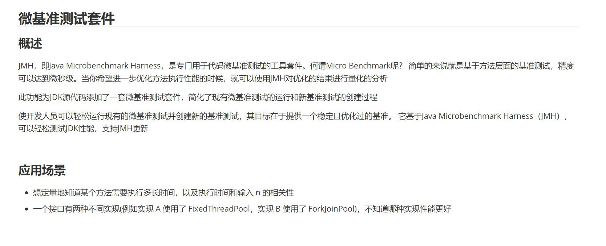
test2.jpg

test3.jpg

编写单元测试：
xxxxxxxxxx531package mao.springboottess4jocr;2
3import net.sourceforge.tess4j.Tesseract;4import net.sourceforge.tess4j.TesseractException;5import org.junit.jupiter.api.Test;6import org.springframework.beans.factory.annotation.Value;7import org.springframework.boot.test.context.SpringBootTest;8
9import java.io.File;10
11class SpringBootTess4JOcrApplicationTests13{14 ("${tess4j.datapath}")15 private String dataPath;16
17
18 19 void contextLoads()20 {21 }22
23 24 void test() throws TesseractException25 {26 long start = System.currentTimeMillis();27 System.out.println("开始OCR文字识图，请稍后...");28 //加载要识别的图片29 File image = new File("./photos/test1.jpg");30 //设置配置文件夹微视、识别语言、识别模式31 Tesseract tesseract = new Tesseract();32 tesseract.setDatapath(dataPath);33 //设置识别语言为中文简体，（如果要设置为英文可改为"eng"）34 tesseract.setLanguage("chi_sim");35 //使用 OSD 进行自动页面分割以进行图像处理36 tesseract.setPageSegMode(1);37 //设置引擎模式是神经网络LSTM引擎38 tesseract.setOcrEngineMode(1);39 //开始识别整张图片中的文字40 String result = tesseract.doOCR(image);41 long time = System.currentTimeMillis() - start;42 System.out.println("识别结束,耗时：" + time + " 毫秒，识别结果如下：");43 System.out.println();44 System.out.println(result.replaceAll(" ",""));45 result = tesseract.doOCR(new File("./photos/test2.jpg"));46 System.out.println();47 System.out.println(result.replaceAll(" ",""));48 result = tesseract.doOCR(new File("./photos/test3.jpg"));49 System.out.println();50 System.out.println(result.replaceAll(" ",""));51 }52
53}
xxxxxxxxxx411开始OCR文字识图，请稍后...2Estimating resolution as 2643识别结束,耗时：3437 毫秒，识别结果如下：4
5微基准测试套件6
7概述8
9JMH,，即javaMicrobenchmarkHarness，是专门用于代码微基准测试的工具套件。何谓MicroBenchmark呢?简单的来说就是基于方法层面的基准测试，精度10可以达到微秒级。当你希望进一步优化方法执行性能的时候，就可以使用MH对优化的结果进行量化的分析11
12此功能为DK源代码添加了一套微基准测试套件，简化了现有微基准测试的运行和新基准测试的创建过程13
14使开发人员可以轻松运行现有的微基准测试并创建新的基准测试，其目标在于提供一个稳定目优化过的基准。它基于javaMicrobenchmarkHarnessUMH)，15可以轻松测试|DK性能，支持IMH更新16
17应用场景18
19。想定量地知道某个方法需要执行多长时间，以及执行时间和输入n的相关性20。一个接口有两种不同实现(例如实现A使用了FixedThreadPool，实现B使用了ForkjoinPool)，不知道哪种实现性能更好21
22
23Estimating resolution as 16524
25am上wwN26
27<dependency>28<groupId>net.sourceforge.tess4j</groupId>29<artifactId>tess4j</artifactId>30<versiony4.5.4</version>31
32</dependency>33
34Estimating resolution as 21835OSD: Weak margin (3.50) for 92 blob text block, but using orientation anyway: 036
37cloudadmin管理员云系统管理员，不可删除工作卓面医废超级角色38clouddefautt操作员云乏统缺省角色，不可删除工作看面医度缺洛角色39manager公司领导仪表指数医废40
41prop_admin工作看面医度岗位角色
耗时5.8秒，不一定准确

编写TesseractOcrConfiguration
xxxxxxxxxx591package mao.springboottess4jocr.config;2
3import lombok.SneakyThrows;4import lombok.extern.slf4j.Slf4j;5import net.sourceforge.tess4j.Tesseract;6import org.slf4j.Logger;7import org.slf4j.LoggerFactory;8import org.springframework.beans.factory.annotation.Value;9import org.springframework.context.annotation.Bean;10import org.springframework.context.annotation.Configuration;11import org.springframework.context.annotation.Lazy;12
13import javax.annotation.PostConstruct;14
15/**16 * Project name(项目名称)：spring-boot-Tess4J-ocr17 * Package(包名): mao.springboottess4jocr.config18 * Class(类名): TesseractOcrConfiguration19 * Author(作者）: mao20 * Author QQ：129619324521 * GitHub：https://github.com/maomao124/22 * Date(创建日期)： 2023/11/723 * Time(创建时间)： 17:0924 * Version(版本): 1.025 * Description(描述)： 无26 */27
28public class TesseractOcrConfiguration31{32 ("${tess4j.datapath}")33 private String dataPath;34
35
36
37 38 39 public Tesseract ocrTesseract()40 {41 Tesseract tesseract = new Tesseract();42 //设置训练数据文件夹路径43 tesseract.setDatapath(dataPath);44 //设置识别语言为中文简体，（如果要设置为英文可改为"eng"）45 tesseract.setLanguage("chi_sim");46 //使用 OSD 进行自动页面分割以进行图像处理47 tesseract.setPageSegMode(1);48 //设置引擎模式是神经网络LSTM引擎49 tesseract.setOcrEngineMode(1);50 log.info("初始化Tesseract");51 return tesseract;52 }53
54 55 public void init()56 {57 log.info("初始化 TesseractOcrConfiguration ，dataPath：" + dataPath);58 }59}
编写OcrService
xxxxxxxxxx721package mao.springboottess4jocr.service;2
3import org.springframework.web.multipart.MultipartFile;4
5import java.io.File;6
7/**8 * Project name(项目名称)：spring-boot-Tess4J-ocr9 * Package(包名): mao.springboottess4jocr.service10 * Interface(接口名): OcrService11 * Author(作者）: mao12 * Author QQ：129619324513 * GitHub：https://github.com/maomao124/14 * Date(创建日期)： 2023/11/715 * Time(创建时间)： 17:0616 * Version(版本): 1.017 * Description(描述)： 文字识别服务18 */19
20public interface OcrService21{22 /**23 * 识别图像的文本，不支持并发24 *25 * @param imageFile 图像文件26 * @return {@link String} 识别后的文字27 */28 String recognizeText(MultipartFile imageFile);29
30 /**31 * 识别图像的文本，不支持并发32 *33 * @param imageFile 图像文件34 * @return {@link String} 识别后的文字35 */36 String recognizeText(File imageFile);37
38 /**39 * 识别图像的文本，支持并发40 *41 * @param imageFile 图像文件42 * @return {@link String} 识别后的文字43 */44 String recognizeTextConcurrency(MultipartFile imageFile);45
46 /**47 * 识别图像的文本，支持并发48 *49 * @param imageFile 图像文件50 * @return {@link String} 识别后的文字51 */52 String recognizeTextConcurrency(File imageFile);53
54
55 /**56 * 识别图像的文本，支持并发57 *58 * @param imageFile 图像文件59 * @param language 语言60 * @return {@link String} 识别后的文字61 */62 String recognizeTextConcurrency(MultipartFile imageFile, String language);63
64 /**65 * 识别图像的文本，支持并发66 *67 * @param imageFile 图像文件68 * @param language 语言69 * @return {@link String} 识别后的文字70 */71 String recognizeTextConcurrency(File imageFile, String language);72}
编写OcrServiceImpl
xxxxxxxxxx1311package mao.springboottess4jocr.service.impl;2
3import lombok.SneakyThrows;4import mao.springboottess4jocr.service.OcrService;5import net.sourceforge.tess4j.Tesseract;6import org.springframework.beans.factory.annotation.Autowired;7import org.springframework.beans.factory.annotation.Value;8import org.springframework.stereotype.Service;9import org.springframework.web.multipart.MultipartFile;10
11import javax.annotation.Resource;12import javax.imageio.ImageIO;13import java.awt.image.BufferedImage;14import java.io.ByteArrayInputStream;15import java.io.File;16import java.io.InputStream;17
18/**19 * Project name(项目名称)：spring-boot-Tess4J-ocr20 * Package(包名): mao.springboottess4jocr.service.impl21 * Class(类名): OcrServiceImpl22 * Author(作者）: mao23 * Author QQ：129619324524 * GitHub：https://github.com/maomao124/25 * Date(创建日期)： 2023/11/726 * Time(创建时间)： 17:0827 * Version(版本): 1.028 * Description(描述)： 文字识别服务实现29 */30
31public class OcrServiceImpl implements OcrService33{34
35 (name = "ocrTesseract")36 private Tesseract ocrTesseract;37
38 ("${tess4j.datapath}")39 private String dataPath;40
41 42 43 public synchronized String recognizeText(MultipartFile imageFile)44 {45 //转换46 InputStream inputStream = new ByteArrayInputStream(imageFile.getBytes());47 BufferedImage bufferedImage = ImageIO.read(inputStream);48 //对图片进行文字识别49 String result = ocrTesseract.doOCR(bufferedImage);50 if (result != null)51 {52 result = result.replaceAll(" ", "");53 }54 return result;55 }56
57 58 59 public synchronized String recognizeText(File imageFile)60 {61 //对图片进行文字识别62 String result = ocrTesseract.doOCR(imageFile);63 if (result != null)64 {65 result = result.replaceAll(" ", "");66 }67 return result;68 }69
70 71 72 public String recognizeTextConcurrency(MultipartFile imageFile)73 {74 return recognizeTextConcurrency(imageFile, "chi_sim");75 }76
77
78 79 80 public String recognizeTextConcurrency(File imageFile)81 {82 return recognizeTextConcurrency(imageFile, "chi_sim");83 }84
85 86 87 public String recognizeTextConcurrency(MultipartFile imageFile, String language)88 {89 Tesseract tesseract = new Tesseract();90 //设置训练数据文件夹路径91 tesseract.setDatapath(dataPath);92 //设置识别语言为中文简体，（如果要设置为英文可改为"eng"）93 tesseract.setLanguage(language);94 //使用 OSD 进行自动页面分割以进行图像处理95 tesseract.setPageSegMode(1);96 //设置引擎模式是神经网络LSTM引擎97 tesseract.setOcrEngineMode(1);98 //对图片进行文字识别99 InputStream inputStream = new ByteArrayInputStream(imageFile.getBytes());100 BufferedImage bufferedImage = ImageIO.read(inputStream);101 //对图片进行文字识别102 String result = ocrTesseract.doOCR(bufferedImage);103 if (result != null)104 {105 result = result.replaceAll(" ", "");106 }107 return result;108 }109
110 111 112 public String recognizeTextConcurrency(File imageFile, String language)113 {114 Tesseract tesseract = new Tesseract();115 //设置训练数据文件夹路径116 tesseract.setDatapath(dataPath);117 //设置识别语言为中文简体，（如果要设置为英文可改为"eng"）118 tesseract.setLanguage(language);119 //使用 OSD 进行自动页面分割以进行图像处理120 tesseract.setPageSegMode(1);121 //设置引擎模式是神经网络LSTM引擎122 tesseract.setOcrEngineMode(1);123 //对图片进行文字识别124 String result = tesseract.doOCR(imageFile);125 if (result != null)126 {127 result = result.replaceAll(" ", "");128 }129 return result;130 }131}
编写单元测试OcrServiceImplTest
xxxxxxxxxx2151package mao.springboottess4jocr.service.impl;2
3import lombok.SneakyThrows;4import net.sourceforge.tess4j.Tesseract;5import net.sourceforge.tess4j.TesseractException;6import org.junit.jupiter.api.Test;7import org.springframework.beans.factory.annotation.Autowired;8import org.springframework.boot.test.context.SpringBootTest;9import org.springframework.boot.test.mock.mockito.MockBean;10
11import java.io.File;12import java.nio.file.Paths;13import java.util.concurrent.CountDownLatch;14
15import static org.junit.jupiter.api.Assertions.assertEquals;16import static org.mockito.Mockito.any;17import static org.mockito.Mockito.verify;18import static org.mockito.Mockito.when;19
20
21class OcrServiceImplTest23{24 25 private OcrServiceImpl ocrServiceImpl;26
27
28 29 30 void testRecognizeText1() throws TesseractException31 {32 System.out.println(ocrServiceImpl.recognizeText(new File("./photos/test1.jpg")));33 }34
35 36 void testRecognizeText2() throws TesseractException37 {38 System.out.println(ocrServiceImpl.recognizeText(new File("./photos/test2.jpg")));39 }40
41 42 void testRecognizeText3() throws TesseractException43 {44 System.out.println(ocrServiceImpl.recognizeText(new File("./photos/test3.jpg")));45 }46
47 48 void testRecognizeText4() throws TesseractException49 {50 System.out.println(ocrServiceImpl.recognizeText(new File("./photos/test4.jpg")));51 }52
53 54 void testRecognizeText5() throws TesseractException55 {56 System.out.println(ocrServiceImpl.recognizeText(new File("./photos/test5.jpg")));57 }58
59 60 void testRecognizeText6() throws TesseractException61 {62 System.out.println(ocrServiceImpl.recognizeText(new File("./photos/test6.jpg")));63 }64
65 66 void testRecognizeText7() throws TesseractException67 {68 System.out.println(ocrServiceImpl.recognizeText(new File("./photos/test7.jpg")));69 }70
71 72 void testRecognizeText8() throws TesseractException73 {74 System.out.println(ocrServiceImpl.recognizeText(new File("./photos/test8.jpg")));75 }76
77 78 void testRecognizeText9() throws TesseractException79 {80 System.out.println(ocrServiceImpl.recognizeText(new File("./photos/test9.jpg")));81 }82
83 84 void testRecognizeText10() throws TesseractException85 {86 System.out.println(ocrServiceImpl.recognizeText(new File("./photos/test10.jpg")));87 }88
89 90 void testRecognizeText11() throws TesseractException91 {92 System.out.println(ocrServiceImpl.recognizeText(new File("./photos/test11.jpg")));93 }94
95 96 void testRecognizeText12() throws TesseractException97 {98 System.out.println(ocrServiceImpl.recognizeText(new File("./photos/test12.jpg")));99 }100
101 102 void testRecognizeText13() throws TesseractException103 {104 System.out.println(ocrServiceImpl.recognizeText(new File("./photos/test13.jpg")));105 }106
107 108 void testRecognizeText14() throws TesseractException109 {110 System.out.println(ocrServiceImpl.recognizeText(new File("./photos/test14.jpg")));111 }112
113 114 void testRecognizeText15() throws TesseractException115 {116 System.out.println(ocrServiceImpl.recognizeText(new File("./photos/test15.jpg")));117 }118
119 120 void testRecognizeText16() throws TesseractException121 {122 System.out.println(ocrServiceImpl.recognizeText(new File("./photos/test16.jpg")));123 }124
125 126 127 void testRecognizeTextConcurrency1() throws TesseractException128 {129 //ocrServiceImpl.recognizeText(new File("./photos/test1.jpg"));130 CountDownLatch countDownLatch = new CountDownLatch(32);131 for (int i = 0; i < 32; i++)132 {133 new Thread(new Runnable()134 {135 136 public void run()137 {138 String s = ocrServiceImpl.recognizeText(new File("./photos/test1.jpg"));139 System.out.println(s);140 countDownLatch.countDown();141 }142 }).start();143 }144 countDownLatch.await();145 }146
147 148 149 void testRecognizeTextConcurrency2() throws TesseractException150 {151 //ocrServiceImpl.recognizeText(new File("./photos/test1.jpg"));152 CountDownLatch countDownLatch = new CountDownLatch(16);153 for (int i = 0; i < 16; i++)154 {155 int finalI = i;156 new Thread(new Runnable()157 {158 159 public void run()160 {161 String s = ocrServiceImpl.recognizeText(new File("./photos/test" + (finalI + 1) + ".jpg"));162 System.out.println(s);163 countDownLatch.countDown();164 }165 }).start();166 }167 countDownLatch.await();168 }169
170 171 172 void testRecognizeTextConcurrency3() throws TesseractException173 {174 //ocrServiceImpl.recognizeText(new File("./photos/test1.jpg"));175 CountDownLatch countDownLatch = new CountDownLatch(16);176 for (int i = 0; i < 16; i++)177 {178 int finalI = i;179 new Thread(new Runnable()180 {181 182 public void run()183 {184 String s = ocrServiceImpl.recognizeTextConcurrency(new File("./photos/test" + (finalI + 1) + ".jpg"));185 System.out.println(s);186 countDownLatch.countDown();187 }188 }).start();189 }190 countDownLatch.await();191 }192
193 194 195 void testRecognizeTextConcurrency4() throws TesseractException196 {197 //ocrServiceImpl.recognizeText(new File("./photos/test1.jpg"));198 CountDownLatch countDownLatch = new CountDownLatch(16);199 for (int i = 0; i < 16; i++)200 {201 int finalI = i;202 new Thread(new Runnable()203 {204 205 public void run()206 {207 String s = ocrServiceImpl.recognizeTextConcurrency(new File("./photos/test1.jpg"));208 System.out.println(s);209 countDownLatch.countDown();210 }211 }).start();212 }213 countDownLatch.await();214 }215}
准备16张图片，名字为test1.jpg到test16.jpg
test4.jpg：
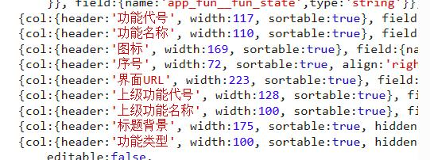
test5.jpg：

test6.jpg：
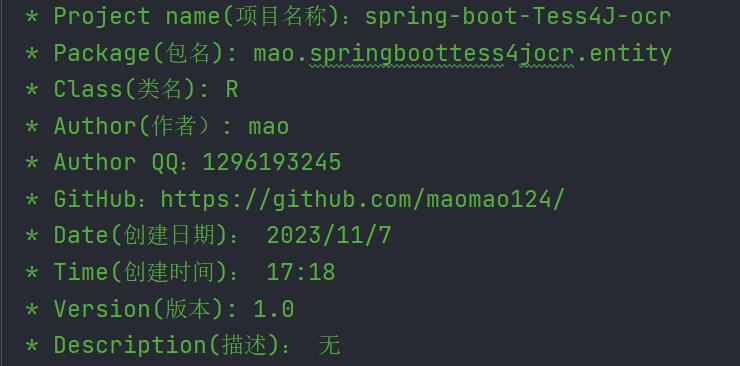
test7.jpg：
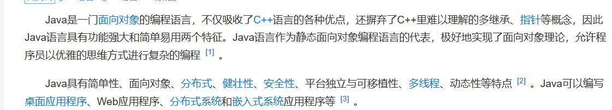
test8.jpg：

test9.jpg：
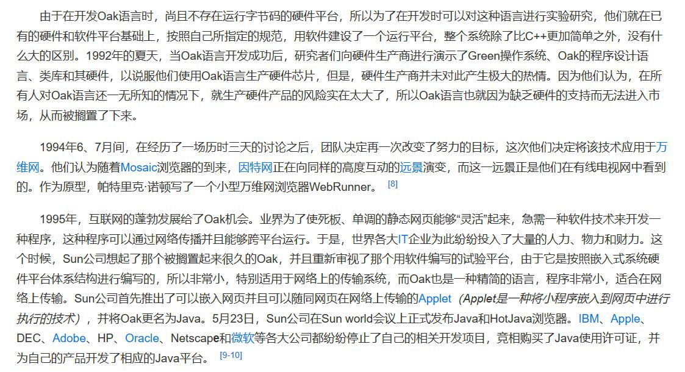
test10.jpg：
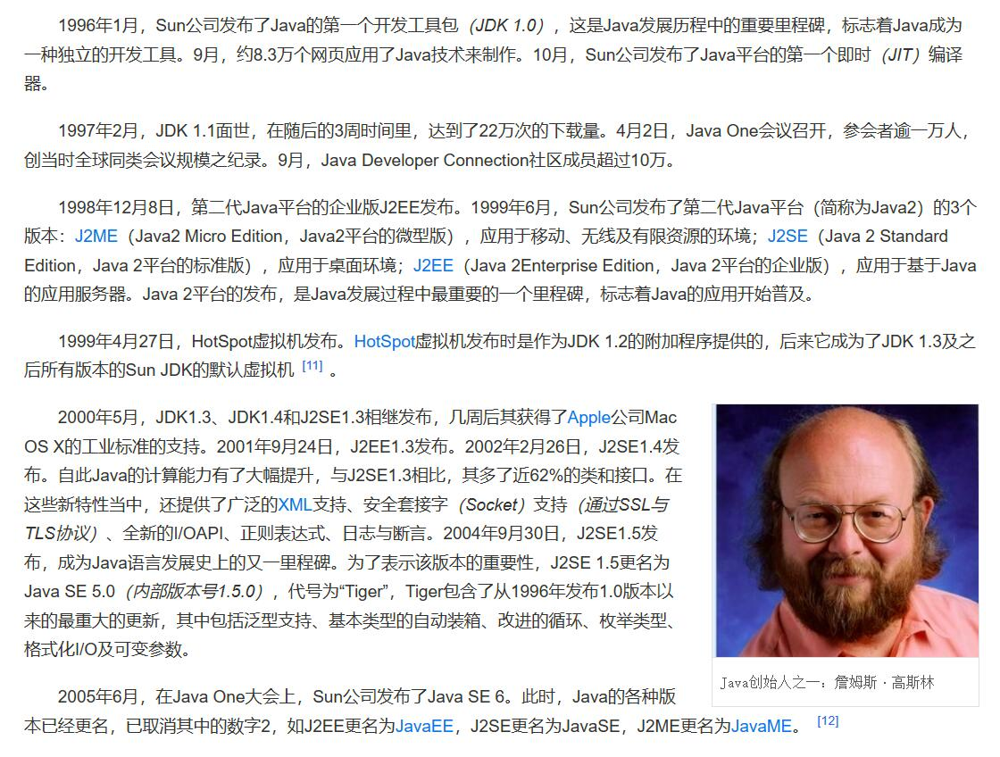
test11.jpg：
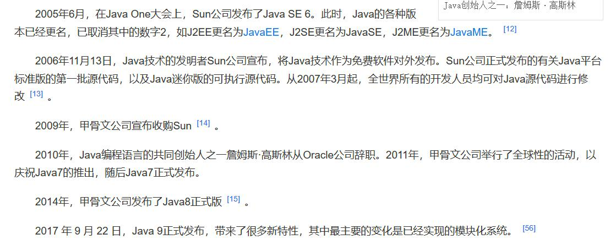
test12.jpg：
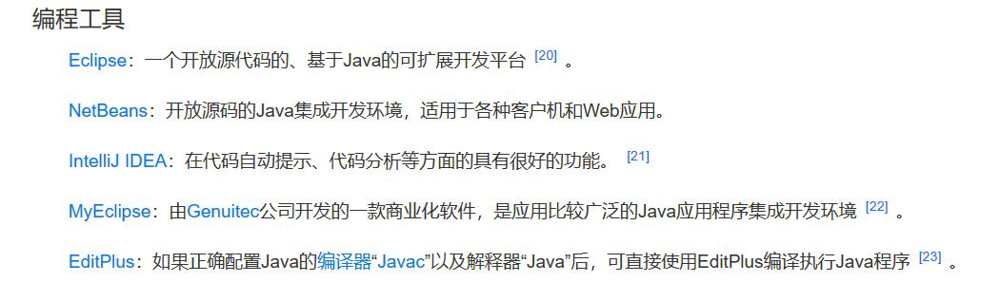
test13.jpg：

test14.jpg：

test15.jpg：
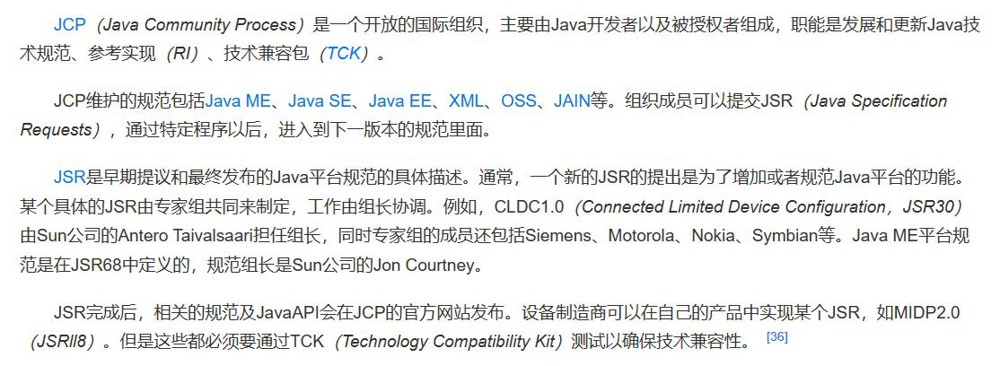
test16.jpg：

运行单元测试，所有测试项耗时如下：

从上到下结果为：
xxxxxxxxxx6091Estimating resolution as 2642微基准测试套件3
4概述5
6JMH,，即javaMicrobenchmarkHarness，是专门用于代码微基准测试的工具套件。何谓MicroBenchmark呢?简单的来说就是基于方法层面的基准测试，精度7可以达到微秒级。当你希望进一步优化方法执行性能的时候，就可以使用MH对优化的结果进行量化的分析8
9此功能为DK源代码添加了一套微基准测试套件，简化了现有微基准测试的运行和新基准测试的创建过程10
11使开发人员可以轻松运行现有的微基准测试并创建新的基准测试，其目标在于提供一个稳定目优化过的基准。它基于javaMicrobenchmarkHarnessUMH)，12可以轻松测试|DK性能，支持IMH更新13
14应用场景15
16。想定量地知道某个方法需要执行多长时间，以及执行时间和输入n的相关性17。一个接口有两种不同实现(例如实现A使用了FixedThreadPool，实现B使用了ForkjoinPool)，不知道哪种实现性能更好18
19
20Estimating resolution as 26421微基准测试套件22
23概述24
25JMH,，即javaMicrobenchmarkHarness，是专门用于代码微基准测试的工具套件。何谓MicroBenchmark呢?简单的来说就是基于方法层面的基准测试，精度26可以达到微秒级。当你希望进一步优化方法执行性能的时候，就可以使用MH对优化的结果进行量化的分析27
28此功能为DK源代码添加了一套微基准测试套件，简化了现有微基准测试的运行和新基准测试的创建过程29
30使开发人员可以轻松运行现有的微基准测试并创建新的基准测试，其目标在于提供一个稳定目优化过的基准。它基于javaMicrobenchmarkHarnessUMH)，31可以轻松测试|DK性能，支持IMH更新32
33应用场景34
35。想定量地知道某个方法需要执行多长时间，以及执行时间和输入n的相关性36。一个接口有两种不同实现(例如实现A使用了FixedThreadPool，实现B使用了ForkjoinPool)，不知道哪种实现性能更好37
38
39Estimating resolution as 26440微基准测试套件41
42概述43
44JMH,，即javaMicrobenchmarkHarness，是专门用于代码微基准测试的工具套件。何谓MicroBenchmark呢?简单的来说就是基于方法层面的基准测试，精度45可以达到微秒级。当你希望进一步优化方法执行性能的时候，就可以使用MH对优化的结果进行量化的分析46
47此功能为DK源代码添加了一套微基准测试套件，简化了现有微基准测试的运行和新基准测试的创建过程48
49使开发人员可以轻松运行现有的微基准测试并创建新的基准测试，其目标在于提供一个稳定目优化过的基准。它基于javaMicrobenchmarkHarnessUMH)，50可以轻松测试|DK性能，支持IMH更新51
52应用场景53
54。想定量地知道某个方法需要执行多长时间，以及执行时间和输入n的相关性55。一个接口有两种不同实现(例如实现A使用了FixedThreadPool，实现B使用了ForkjoinPool)，不知道哪种实现性能更好56
57
58Estimating resolution as 26459微基准测试套件60
61概述62
63JMH,，即javaMicrobenchmarkHarness，是专门用于代码微基准测试的工具套件。何谓MicroBenchmark呢?简单的来说就是基于方法层面的基准测试，精度64可以达到微秒级。当你希望进一步优化方法执行性能的时候，就可以使用MH对优化的结果进行量化的分析65
66此功能为DK源代码添加了一套微基准测试套件，简化了现有微基准测试的运行和新基准测试的创建过程67
68使开发人员可以轻松运行现有的微基准测试并创建新的基准测试，其目标在于提供一个稳定目优化过的基准。它基于javaMicrobenchmarkHarnessUMH)，69可以轻松测试|DK性能，支持IMH更新70
71应用场景72
73。想定量地知道某个方法需要执行多长时间，以及执行时间和输入n的相关性74。一个接口有两种不同实现(例如实现A使用了FixedThreadPool，实现B使用了ForkjoinPool)，不知道哪种实现性能更好75
76
77Estimating resolution as 26478微基准测试套件79
80概述81
82JMH,，即javaMicrobenchmarkHarness，是专门用于代码微基准测试的工具套件。何谓MicroBenchmark呢?简单的来说就是基于方法层面的基准测试，精度83可以达到微秒级。当你希望进一步优化方法执行性能的时候，就可以使用MH对优化的结果进行量化的分析84
85此功能为DK源代码添加了一套微基准测试套件，简化了现有微基准测试的运行和新基准测试的创建过程86
87使开发人员可以轻松运行现有的微基准测试并创建新的基准测试，其目标在于提供一个稳定目优化过的基准。它基于javaMicrobenchmarkHarnessUMH)，88可以轻松测试|DK性能，支持IMH更新89
90应用场景91
92。想定量地知道某个方法需要执行多长时间，以及执行时间和输入n的相关性93。一个接口有两种不同实现(例如实现A使用了FixedThreadPool，实现B使用了ForkjoinPool)，不知道哪种实现性能更好94
95
96Estimating resolution as 26497微基准测试套件98
99概述100
101JMH,，即javaMicrobenchmarkHarness，是专门用于代码微基准测试的工具套件。何谓MicroBenchmark呢?简单的来说就是基于方法层面的基准测试，精度102可以达到微秒级。当你希望进一步优化方法执行性能的时候，就可以使用MH对优化的结果进行量化的分析103
104此功能为DK源代码添加了一套微基准测试套件，简化了现有微基准测试的运行和新基准测试的创建过程105
106使开发人员可以轻松运行现有的微基准测试并创建新的基准测试，其目标在于提供一个稳定目优化过的基准。它基于javaMicrobenchmarkHarnessUMH)，107可以轻松测试|DK性能，支持IMH更新108
109应用场景110
111。想定量地知道某个方法需要执行多长时间，以及执行时间和输入n的相关性112。一个接口有两种不同实现(例如实现A使用了FixedThreadPool，实现B使用了ForkjoinPool)，不知道哪种实现性能更好113
114
115Estimating resolution as 264116微基准测试套件117
118概述119
120JMH,，即javaMicrobenchmarkHarness，是专门用于代码微基准测试的工具套件。何谓MicroBenchmark呢?简单的来说就是基于方法层面的基准测试，精度121可以达到微秒级。当你希望进一步优化方法执行性能的时候，就可以使用MH对优化的结果进行量化的分析122
123此功能为DK源代码添加了一套微基准测试套件，简化了现有微基准测试的运行和新基准测试的创建过程124
125使开发人员可以轻松运行现有的微基准测试并创建新的基准测试，其目标在于提供一个稳定目优化过的基准。它基于javaMicrobenchmarkHarnessUMH)，126可以轻松测试|DK性能，支持IMH更新127
128应用场景129
130。想定量地知道某个方法需要执行多长时间，以及执行时间和输入n的相关性131。一个接口有两种不同实现(例如实现A使用了FixedThreadPool，实现B使用了ForkjoinPool)，不知道哪种实现性能更好132
133
134Estimating resolution as 264135微基准测试套件136
137概述138
139JMH,，即javaMicrobenchmarkHarness，是专门用于代码微基准测试的工具套件。何谓MicroBenchmark呢?简单的来说就是基于方法层面的基准测试，精度140可以达到微秒级。当你希望进一步优化方法执行性能的时候，就可以使用MH对优化的结果进行量化的分析141
142此功能为DK源代码添加了一套微基准测试套件，简化了现有微基准测试的运行和新基准测试的创建过程143
144使开发人员可以轻松运行现有的微基准测试并创建新的基准测试，其目标在于提供一个稳定目优化过的基准。它基于javaMicrobenchmarkHarnessUMH)，145可以轻松测试|DK性能，支持IMH更新146
147应用场景148
149。想定量地知道某个方法需要执行多长时间，以及执行时间和输入n的相关性150。一个接口有两种不同实现(例如实现A使用了FixedThreadPool，实现B使用了ForkjoinPool)，不知道哪种实现性能更好151
152
153Estimating resolution as 264154微基准测试套件155
156概述157
158JMH,，即javaMicrobenchmarkHarness，是专门用于代码微基准测试的工具套件。何谓MicroBenchmark呢?简单的来说就是基于方法层面的基准测试，精度159可以达到微秒级。当你希望进一步优化方法执行性能的时候，就可以使用MH对优化的结果进行量化的分析160
161此功能为DK源代码添加了一套微基准测试套件，简化了现有微基准测试的运行和新基准测试的创建过程162
163使开发人员可以轻松运行现有的微基准测试并创建新的基准测试，其目标在于提供一个稳定目优化过的基准。它基于javaMicrobenchmarkHarnessUMH)，164可以轻松测试|DK性能，支持IMH更新165
166应用场景167
168。想定量地知道某个方法需要执行多长时间，以及执行时间和输入n的相关性169。一个接口有两种不同实现(例如实现A使用了FixedThreadPool，实现B使用了ForkjoinPool)，不知道哪种实现性能更好170
171
172Estimating resolution as 264173微基准测试套件174
175概述176
177JMH,，即javaMicrobenchmarkHarness，是专门用于代码微基准测试的工具套件。何谓MicroBenchmark呢?简单的来说就是基于方法层面的基准测试，精度178可以达到微秒级。当你希望进一步优化方法执行性能的时候，就可以使用MH对优化的结果进行量化的分析179
180此功能为DK源代码添加了一套微基准测试套件，简化了现有微基准测试的运行和新基准测试的创建过程181
182使开发人员可以轻松运行现有的微基准测试并创建新的基准测试，其目标在于提供一个稳定目优化过的基准。它基于javaMicrobenchmarkHarnessUMH)，183可以轻松测试|DK性能，支持IMH更新184
185应用场景186
187。想定量地知道某个方法需要执行多长时间，以及执行时间和输入n的相关性188。一个接口有两种不同实现(例如实现A使用了FixedThreadPool，实现B使用了ForkjoinPool)，不知道哪种实现性能更好189
190
191Estimating resolution as 264192微基准测试套件193
194概述195
196JMH,，即javaMicrobenchmarkHarness，是专门用于代码微基准测试的工具套件。何谓MicroBenchmark呢?简单的来说就是基于方法层面的基准测试，精度197可以达到微秒级。当你希望进一步优化方法执行性能的时候，就可以使用MH对优化的结果进行量化的分析198
199此功能为DK源代码添加了一套微基准测试套件，简化了现有微基准测试的运行和新基准测试的创建过程200
201使开发人员可以轻松运行现有的微基准测试并创建新的基准测试，其目标在于提供一个稳定目优化过的基准。它基于javaMicrobenchmarkHarnessUMH)，202可以轻松测试|DK性能，支持IMH更新203
204应用场景205
206。想定量地知道某个方法需要执行多长时间，以及执行时间和输入n的相关性207。一个接口有两种不同实现(例如实现A使用了FixedThreadPool，实现B使用了ForkjoinPool)，不知道哪种实现性能更好208
209
210Estimating resolution as 264211微基准测试套件212
213概述214
215JMH,，即javaMicrobenchmarkHarness，是专门用于代码微基准测试的工具套件。何谓MicroBenchmark呢?简单的来说就是基于方法层面的基准测试，精度216可以达到微秒级。当你希望进一步优化方法执行性能的时候，就可以使用MH对优化的结果进行量化的分析217
218此功能为DK源代码添加了一套微基准测试套件，简化了现有微基准测试的运行和新基准测试的创建过程219
220使开发人员可以轻松运行现有的微基准测试并创建新的基准测试，其目标在于提供一个稳定目优化过的基准。它基于javaMicrobenchmarkHarnessUMH)，221可以轻松测试|DK性能，支持IMH更新222
223应用场景224
225。想定量地知道某个方法需要执行多长时间，以及执行时间和输入n的相关性226。一个接口有两种不同实现(例如实现A使用了FixedThreadPool，实现B使用了ForkjoinPool)，不知道哪种实现性能更好227
228
229Estimating resolution as 264230微基准测试套件231
232概述233
234JMH,，即javaMicrobenchmarkHarness，是专门用于代码微基准测试的工具套件。何谓MicroBenchmark呢?简单的来说就是基于方法层面的基准测试，精度235可以达到微秒级。当你希望进一步优化方法执行性能的时候，就可以使用MH对优化的结果进行量化的分析236
237此功能为DK源代码添加了一套微基准测试套件，简化了现有微基准测试的运行和新基准测试的创建过程238
239使开发人员可以轻松运行现有的微基准测试并创建新的基准测试，其目标在于提供一个稳定目优化过的基准。它基于javaMicrobenchmarkHarnessUMH)，240可以轻松测试|DK性能，支持IMH更新241
242应用场景243
244。想定量地知道某个方法需要执行多长时间，以及执行时间和输入n的相关性245。一个接口有两种不同实现(例如实现A使用了FixedThreadPool，实现B使用了ForkjoinPool)，不知道哪种实现性能更好246
247
248Estimating resolution as 264249微基准测试套件250
251概述252
253JMH,，即javaMicrobenchmarkHarness，是专门用于代码微基准测试的工具套件。何谓MicroBenchmark呢?简单的来说就是基于方法层面的基准测试，精度254可以达到微秒级。当你希望进一步优化方法执行性能的时候，就可以使用MH对优化的结果进行量化的分析255
256此功能为DK源代码添加了一套微基准测试套件，简化了现有微基准测试的运行和新基准测试的创建过程257
258使开发人员可以轻松运行现有的微基准测试并创建新的基准测试，其目标在于提供一个稳定目优化过的基准。它基于javaMicrobenchmarkHarnessUMH)，259可以轻松测试|DK性能，支持IMH更新260
261应用场景262
263。想定量地知道某个方法需要执行多长时间，以及执行时间和输入n的相关性264。一个接口有两种不同实现(例如实现A使用了FixedThreadPool，实现B使用了ForkjoinPool)，不知道哪种实现性能更好265
266
267Estimating resolution as 264268微基准测试套件269
270概述271
272JMH,，即javaMicrobenchmarkHarness，是专门用于代码微基准测试的工具套件。何谓MicroBenchmark呢?简单的来说就是基于方法层面的基准测试，精度273可以达到微秒级。当你希望进一步优化方法执行性能的时候，就可以使用MH对优化的结果进行量化的分析274
275此功能为DK源代码添加了一套微基准测试套件，简化了现有微基准测试的运行和新基准测试的创建过程276
277使开发人员可以轻松运行现有的微基准测试并创建新的基准测试，其目标在于提供一个稳定目优化过的基准。它基于javaMicrobenchmarkHarnessUMH)，278可以轻松测试|DK性能，支持IMH更新279
280应用场景281
282。想定量地知道某个方法需要执行多长时间，以及执行时间和输入n的相关性283。一个接口有两种不同实现(例如实现A使用了FixedThreadPool，实现B使用了ForkjoinPool)，不知道哪种实现性能更好284
285
286Estimating resolution as 264287微基准测试套件288
289概述290
291JMH,，即javaMicrobenchmarkHarness，是专门用于代码微基准测试的工具套件。何谓MicroBenchmark呢?简单的来说就是基于方法层面的基准测试，精度292可以达到微秒级。当你希望进一步优化方法执行性能的时候，就可以使用MH对优化的结果进行量化的分析293
294此功能为DK源代码添加了一套微基准测试套件，简化了现有微基准测试的运行和新基准测试的创建过程295
296使开发人员可以轻松运行现有的微基准测试并创建新的基准测试，其目标在于提供一个稳定目优化过的基准。它基于javaMicrobenchmarkHarnessUMH)，297可以轻松测试|DK性能，支持IMH更新298
299应用场景300
301。想定量地知道某个方法需要执行多长时间，以及执行时间和输入n的相关性302。一个接口有两种不同实现(例如实现A使用了FixedThreadPool，实现B使用了ForkjoinPool)，不知道哪种实现性能更好303
304
305Estimating resolution as 264306微基准测试套件307
308概述309
310JMH,，即javaMicrobenchmarkHarness，是专门用于代码微基准测试的工具套件。何谓MicroBenchmark呢?简单的来说就是基于方法层面的基准测试，精度311可以达到微秒级。当你希望进一步优化方法执行性能的时候，就可以使用MH对优化的结果进行量化的分析312
313此功能为DK源代码添加了一套微基准测试套件，简化了现有微基准测试的运行和新基准测试的创建过程314
315使开发人员可以轻松运行现有的微基准测试并创建新的基准测试，其目标在于提供一个稳定目优化过的基准。它基于javaMicrobenchmarkHarnessUMH)，316可以轻松测试|DK性能，支持IMH更新317
318应用场景319
320。想定量地知道某个方法需要执行多长时间，以及执行时间和输入n的相关性321。一个接口有两种不同实现(例如实现A使用了FixedThreadPool，实现B使用了ForkjoinPool)，不知道哪种实现性能更好322
323
324Estimating resolution as 264325微基准测试套件326
327概述328
329JMH,，即javaMicrobenchmarkHarness，是专门用于代码微基准测试的工具套件。何谓MicroBenchmark呢?简单的来说就是基于方法层面的基准测试，精度330可以达到微秒级。当你希望进一步优化方法执行性能的时候，就可以使用MH对优化的结果进行量化的分析331
332此功能为DK源代码添加了一套微基准测试套件，简化了现有微基准测试的运行和新基准测试的创建过程333
334使开发人员可以轻松运行现有的微基准测试并创建新的基准测试，其目标在于提供一个稳定目优化过的基准。它基于javaMicrobenchmarkHarnessUMH)，335可以轻松测试|DK性能，支持IMH更新336
337应用场景338
339。想定量地知道某个方法需要执行多长时间，以及执行时间和输入n的相关性340。一个接口有两种不同实现(例如实现A使用了FixedThreadPool，实现B使用了ForkjoinPool)，不知道哪种实现性能更好341
342
343Estimating resolution as 264344微基准测试套件345
346概述347
348JMH,，即javaMicrobenchmarkHarness，是专门用于代码微基准测试的工具套件。何谓MicroBenchmark呢?简单的来说就是基于方法层面的基准测试，精度349可以达到微秒级。当你希望进一步优化方法执行性能的时候，就可以使用MH对优化的结果进行量化的分析350
351此功能为DK源代码添加了一套微基准测试套件，简化了现有微基准测试的运行和新基准测试的创建过程352
353使开发人员可以轻松运行现有的微基准测试并创建新的基准测试，其目标在于提供一个稳定目优化过的基准。它基于javaMicrobenchmarkHarnessUMH)，354可以轻松测试|DK性能，支持IMH更新355
356应用场景357
358。想定量地知道某个方法需要执行多长时间，以及执行时间和输入n的相关性359。一个接口有两种不同实现(例如实现A使用了FixedThreadPool，实现B使用了ForkjoinPool)，不知道哪种实现性能更好360
361
362Estimating resolution as 264363微基准测试套件364
365概述366
367JMH,，即javaMicrobenchmarkHarness，是专门用于代码微基准测试的工具套件。何谓MicroBenchmark呢?简单的来说就是基于方法层面的基准测试，精度368可以达到微秒级。当你希望进一步优化方法执行性能的时候，就可以使用MH对优化的结果进行量化的分析369
370此功能为DK源代码添加了一套微基准测试套件，简化了现有微基准测试的运行和新基准测试的创建过程371
372使开发人员可以轻松运行现有的微基准测试并创建新的基准测试，其目标在于提供一个稳定目优化过的基准。它基于javaMicrobenchmarkHarnessUMH)，373可以轻松测试|DK性能，支持IMH更新374
375应用场景376
377。想定量地知道某个方法需要执行多长时间，以及执行时间和输入n的相关性378。一个接口有两种不同实现(例如实现A使用了FixedThreadPool，实现B使用了ForkjoinPool)，不知道哪种实现性能更好379
380
381Estimating resolution as 264382微基准测试套件383
384概述385
386JMH,，即javaMicrobenchmarkHarness，是专门用于代码微基准测试的工具套件。何谓MicroBenchmark呢?简单的来说就是基于方法层面的基准测试，精度387可以达到微秒级。当你希望进一步优化方法执行性能的时候，就可以使用MH对优化的结果进行量化的分析388
389此功能为DK源代码添加了一套微基准测试套件，简化了现有微基准测试的运行和新基准测试的创建过程390
391使开发人员可以轻松运行现有的微基准测试并创建新的基准测试，其目标在于提供一个稳定目优化过的基准。它基于javaMicrobenchmarkHarnessUMH)，392可以轻松测试|DK性能，支持IMH更新393
394应用场景395
396。想定量地知道某个方法需要执行多长时间，以及执行时间和输入n的相关性397。一个接口有两种不同实现(例如实现A使用了FixedThreadPool，实现B使用了ForkjoinPool)，不知道哪种实现性能更好398
399
400Estimating resolution as 264401微基准测试套件402
403概述404
405JMH,，即javaMicrobenchmarkHarness，是专门用于代码微基准测试的工具套件。何谓MicroBenchmark呢?简单的来说就是基于方法层面的基准测试，精度406可以达到微秒级。当你希望进一步优化方法执行性能的时候，就可以使用MH对优化的结果进行量化的分析407
408此功能为DK源代码添加了一套微基准测试套件，简化了现有微基准测试的运行和新基准测试的创建过程409
410使开发人员可以轻松运行现有的微基准测试并创建新的基准测试，其目标在于提供一个稳定目优化过的基准。它基于javaMicrobenchmarkHarnessUMH)，411可以轻松测试|DK性能，支持IMH更新412
413应用场景414
415。想定量地知道某个方法需要执行多长时间，以及执行时间和输入n的相关性416。一个接口有两种不同实现(例如实现A使用了FixedThreadPool，实现B使用了ForkjoinPool)，不知道哪种实现性能更好417
418
419Estimating resolution as 264420微基准测试套件421
422概述423
424JMH,，即javaMicrobenchmarkHarness，是专门用于代码微基准测试的工具套件。何谓MicroBenchmark呢?简单的来说就是基于方法层面的基准测试，精度425可以达到微秒级。当你希望进一步优化方法执行性能的时候，就可以使用MH对优化的结果进行量化的分析426
427此功能为DK源代码添加了一套微基准测试套件，简化了现有微基准测试的运行和新基准测试的创建过程428
429使开发人员可以轻松运行现有的微基准测试并创建新的基准测试，其目标在于提供一个稳定目优化过的基准。它基于javaMicrobenchmarkHarnessUMH)，430可以轻松测试|DK性能，支持IMH更新431
432应用场景433
434。想定量地知道某个方法需要执行多长时间，以及执行时间和输入n的相关性435。一个接口有两种不同实现(例如实现A使用了FixedThreadPool，实现B使用了ForkjoinPool)，不知道哪种实现性能更好436
437
438Estimating resolution as 264439微基准测试套件440
441概述442
443JMH,，即javaMicrobenchmarkHarness，是专门用于代码微基准测试的工具套件。何谓MicroBenchmark呢?简单的来说就是基于方法层面的基准测试，精度444可以达到微秒级。当你希望进一步优化方法执行性能的时候，就可以使用MH对优化的结果进行量化的分析445
446此功能为DK源代码添加了一套微基准测试套件，简化了现有微基准测试的运行和新基准测试的创建过程447
448使开发人员可以轻松运行现有的微基准测试并创建新的基准测试，其目标在于提供一个稳定目优化过的基准。它基于javaMicrobenchmarkHarnessUMH)，449可以轻松测试|DK性能，支持IMH更新450
451应用场景452
453。想定量地知道某个方法需要执行多长时间，以及执行时间和输入n的相关性454。一个接口有两种不同实现(例如实现A使用了FixedThreadPool，实现B使用了ForkjoinPool)，不知道哪种实现性能更好455
456
457Estimating resolution as 264458微基准测试套件459
460概述461
462JMH,，即javaMicrobenchmarkHarness，是专门用于代码微基准测试的工具套件。何谓MicroBenchmark呢?简单的来说就是基于方法层面的基准测试，精度463可以达到微秒级。当你希望进一步优化方法执行性能的时候，就可以使用MH对优化的结果进行量化的分析464
465此功能为DK源代码添加了一套微基准测试套件，简化了现有微基准测试的运行和新基准测试的创建过程466
467使开发人员可以轻松运行现有的微基准测试并创建新的基准测试，其目标在于提供一个稳定目优化过的基准。它基于javaMicrobenchmarkHarnessUMH)，468可以轻松测试|DK性能，支持IMH更新469
470应用场景471
472。想定量地知道某个方法需要执行多长时间，以及执行时间和输入n的相关性473。一个接口有两种不同实现(例如实现A使用了FixedThreadPool，实现B使用了ForkjoinPool)，不知道哪种实现性能更好474
475
476Estimating resolution as 264477微基准测试套件478
479概述480
481JMH,，即javaMicrobenchmarkHarness，是专门用于代码微基准测试的工具套件。何谓MicroBenchmark呢?简单的来说就是基于方法层面的基准测试，精度482可以达到微秒级。当你希望进一步优化方法执行性能的时候，就可以使用MH对优化的结果进行量化的分析483
484此功能为DK源代码添加了一套微基准测试套件，简化了现有微基准测试的运行和新基准测试的创建过程485
486使开发人员可以轻松运行现有的微基准测试并创建新的基准测试，其目标在于提供一个稳定目优化过的基准。它基于javaMicrobenchmarkHarnessUMH)，487可以轻松测试|DK性能，支持IMH更新488
489应用场景490
491。想定量地知道某个方法需要执行多长时间，以及执行时间和输入n的相关性492。一个接口有两种不同实现(例如实现A使用了FixedThreadPool，实现B使用了ForkjoinPool)，不知道哪种实现性能更好493
494
495Estimating resolution as 264496微基准测试套件497
498概述499
500JMH,，即javaMicrobenchmarkHarness，是专门用于代码微基准测试的工具套件。何谓MicroBenchmark呢?简单的来说就是基于方法层面的基准测试，精度501可以达到微秒级。当你希望进一步优化方法执行性能的时候，就可以使用MH对优化的结果进行量化的分析502
503此功能为DK源代码添加了一套微基准测试套件，简化了现有微基准测试的运行和新基准测试的创建过程504
505使开发人员可以轻松运行现有的微基准测试并创建新的基准测试，其目标在于提供一个稳定目优化过的基准。它基于javaMicrobenchmarkHarnessUMH)，506可以轻松测试|DK性能，支持IMH更新507
508应用场景509
510。想定量地知道某个方法需要执行多长时间，以及执行时间和输入n的相关性511。一个接口有两种不同实现(例如实现A使用了FixedThreadPool，实现B使用了ForkjoinPool)，不知道哪种实现性能更好512
513
514Estimating resolution as 264515微基准测试套件516
517概述518
519JMH,，即javaMicrobenchmarkHarness，是专门用于代码微基准测试的工具套件。何谓MicroBenchmark呢?简单的来说就是基于方法层面的基准测试，精度520可以达到微秒级。当你希望进一步优化方法执行性能的时候，就可以使用MH对优化的结果进行量化的分析521
522此功能为DK源代码添加了一套微基准测试套件，简化了现有微基准测试的运行和新基准测试的创建过程523
524使开发人员可以轻松运行现有的微基准测试并创建新的基准测试，其目标在于提供一个稳定目优化过的基准。它基于javaMicrobenchmarkHarnessUMH)，525可以轻松测试|DK性能，支持IMH更新526
527应用场景528
529。想定量地知道某个方法需要执行多长时间，以及执行时间和输入n的相关性530。一个接口有两种不同实现(例如实现A使用了FixedThreadPool，实现B使用了ForkjoinPool)，不知道哪种实现性能更好531
532
533Estimating resolution as 264534微基准测试套件535
536概述537
538JMH,，即javaMicrobenchmarkHarness，是专门用于代码微基准测试的工具套件。何谓MicroBenchmark呢?简单的来说就是基于方法层面的基准测试，精度539可以达到微秒级。当你希望进一步优化方法执行性能的时候，就可以使用MH对优化的结果进行量化的分析540
541此功能为DK源代码添加了一套微基准测试套件，简化了现有微基准测试的运行和新基准测试的创建过程542
543使开发人员可以轻松运行现有的微基准测试并创建新的基准测试，其目标在于提供一个稳定目优化过的基准。它基于javaMicrobenchmarkHarnessUMH)，544可以轻松测试|DK性能，支持IMH更新545
546应用场景547
548。想定量地知道某个方法需要执行多长时间，以及执行时间和输入n的相关性549。一个接口有两种不同实现(例如实现A使用了FixedThreadPool，实现B使用了ForkjoinPool)，不知道哪种实现性能更好550
551
552Estimating resolution as 264553微基准测试套件554
555概述556
557JMH,，即javaMicrobenchmarkHarness，是专门用于代码微基准测试的工具套件。何谓MicroBenchmark呢?简单的来说就是基于方法层面的基准测试，精度558可以达到微秒级。当你希望进一步优化方法执行性能的时候，就可以使用MH对优化的结果进行量化的分析559
560此功能为DK源代码添加了一套微基准测试套件，简化了现有微基准测试的运行和新基准测试的创建过程561
562使开发人员可以轻松运行现有的微基准测试并创建新的基准测试，其目标在于提供一个稳定目优化过的基准。它基于javaMicrobenchmarkHarnessUMH)，563可以轻松测试|DK性能，支持IMH更新564
565应用场景566
567。想定量地知道某个方法需要执行多长时间，以及执行时间和输入n的相关性568。一个接口有两种不同实现(例如实现A使用了FixedThreadPool，实现B使用了ForkjoinPool)，不知道哪种实现性能更好569
570
571Estimating resolution as 264572微基准测试套件573
574概述575
576JMH,，即javaMicrobenchmarkHarness，是专门用于代码微基准测试的工具套件。何谓MicroBenchmark呢?简单的来说就是基于方法层面的基准测试，精度577可以达到微秒级。当你希望进一步优化方法执行性能的时候，就可以使用MH对优化的结果进行量化的分析578
579此功能为DK源代码添加了一套微基准测试套件，简化了现有微基准测试的运行和新基准测试的创建过程580
581使开发人员可以轻松运行现有的微基准测试并创建新的基准测试，其目标在于提供一个稳定目优化过的基准。它基于javaMicrobenchmarkHarnessUMH)，582可以轻松测试|DK性能，支持IMH更新583
584应用场景585
586。想定量地知道某个方法需要执行多长时间，以及执行时间和输入n的相关性587。一个接口有两种不同实现(例如实现A使用了FixedThreadPool，实现B使用了ForkjoinPool)，不知道哪种实现性能更好588
589
590Estimating resolution as 264591微基准测试套件592
593概述594
595JMH,，即javaMicrobenchmarkHarness，是专门用于代码微基准测试的工具套件。何谓MicroBenchmark呢?简单的来说就是基于方法层面的基准测试，精度596可以达到微秒级。当你希望进一步优化方法执行性能的时候，就可以使用MH对优化的结果进行量化的分析597
598此功能为DK源代码添加了一套微基准测试套件，简化了现有微基准测试的运行和新基准测试的创建过程599
600使开发人员可以轻松运行现有的微基准测试并创建新的基准测试，其目标在于提供一个稳定目优化过的基准。它基于javaMicrobenchmarkHarnessUMH)，601可以轻松测试|DK性能，支持IMH更新602
603应用场景604
605。想定量地知道某个方法需要执行多长时间，以及执行时间和输入n的相关性606。一个接口有两种不同实现(例如实现A使用了FixedThreadPool，实现B使用了ForkjoinPool)，不知道哪种实现性能更好607
608
609
xxxxxxxxxx3401Estimating resolution as 1652am上wwN3
4<dependency>5<groupId>net.sourceforge.tess4j</groupId>6<artifactId>tess4j</artifactId>7<versiony4.5.4</version>8
9</dependency>10
11Estimating resolution as 18212Too few characters. Skipping this page13OSD: Weak margin (0.00) for 13 blob text block, but using orientation anyway: 014数据类型15
16数据类型17
188位19
2016位2132位2264位23
2432位2564位26
27内存28
29内存30
31Estimating resolution as 22932OSD: Weak margin (2.85) for 780 blob text block, but using orientation anyway: 033Detected 35 diacritics34安全性35
36Java的存储分配模型是它防御恶意代码的主要方法之一。Java没有指针，所以程序员不能得到隐藏起来的内幕和伪造指针去37指向存储器。更重要的是，Java编译程序不处理存储安排决策，所以程序员不能通过查看声明去猜测类的实际存储安排。编译的38Java代码中的存储引用在运行时由Java解释程序决定实际存储地址。39
40Java运行系统使用字节码验证过程来保证装载到网络上的代码不违背任何Java语言限制。这个安全机制部分包括类如何从网41上上装载。例如，装载的类是放在分开的名字空间而不是局部类，预防恶意的小应用程序用它自己的版本来代蔡标准Java类。42
43可移植性44
45Java使得语言声明不依赖于实现的方面。例如，Java显式说明每个基本数据类型的大小和它的运算行为(这些数据类型由46Java语法入述)。47
48Java环境本身对新的硬件平台和操作系统是可移植的。Java编译程序也用Java编写，而Java运行系统用ANSIC语言编写。49
50高性能51Java是一种先编译后解释的语言，所以它不如全编译性语言快。但是有些情况下性能是很要紧的，为了支持这些情况，Java52设计者制作了"及时"编译程序，它能在运行时把Java字节码翻译成特定CPU(中央处理加)的机器代码，也就是实现全编译了。53
54Java字节码格式设计时考虑到这些"及时"编译程序的需要，所以生成机器代码的过程相当简单，它能产生相当好的代码。55
56多线程性57Java是多线程语言，它提供支持多线程的执行(也黎为最便过想)，能处理不同任务，使具有线索的程序设计很容易。Java58的lang包提供一个Thread类，它支持开始线索、运行线索、停止线索和检查线索状态的方法。59
60Java的线索支持也包括一组同步原语。这些原语是基于监督程序和条件变量风范，由C.A.R.Haore开发的广泛使用的同步化61方案。用关键词synchronized，程序员可以说明某些方法在一个类中不能并发地运行。这些方法在监督程序控制之下，确保变量62维持在一个一致的状态。63
64动态性65Java语言设计成适应于变化的环境，它是一个动态的语言。例如，Java中的类是根据需要载入的，甚至有些是通过网络获取66的。pq67
68
69Estimating resolution as 21970OSD: Weak margin (0.89) for 499 blob text block, but using orientation anyway: 071团72
73JCP(avaCommunityProcess)是一个开放的74术规范、参考实现(R/)、技术兼容包(TCHKJ)。75
76际组织，主要由Java开发者以及被授权者组成，职能是发展和更新Java技77
78JCP维护的规范包括JavaME、JavaSE、JavaEE、XML、OSS、JAIN等。组织成员可以提交JSR(uavaSpecification79
80Requests)，通过特定程序以后，进入到下一版本的规范里面。81
82JSR是早期提议和最终发布的Java平台规范的具体描述。通常，一个新的JSR的提出是为了增加或者规范Java平台的功能。83某个具体的JSR由专家组共同来制定，工作由组长协调。例如，CLDC1.0(ConnectedLimitedDeviceConfiguration，JSR30)84由Sun公司的AnteroTaivalsaari担任组长，同时专家组的成员还包括Siemens、Motorola、Nokia、Symbian等。JavaME平台;85
86范是在JSR68中定义的，规范组长是Sun公司的JonCourtney。87
88JSR完成后，相关的规范及JavaAPI会在JCP的官方网站发布。设备制造商可以在自己的产品中实现某个JSR，如MIDP2.089
90WiSRW6)。但是这些都必须要通过TCK(TechnologyCompatbjliyKib)测试以确保技术妆91
92容性。93
94[36]95
96Estimating resolution as 23097OSD: Weak margin (1.90) for 134 blob text block, but using orientation anyway: 098自增和自减是单目运算符，可以放在操作元之前，也可以放在操作元之后。操作元必须是一个整型或浮点型变量。自增、自99减运算符的作用是使变量的值增1或减1。放在操作元前面的自增、自减运算符，会先将变量的值加1或减1，然后再使该变量参与100表达式的运算。放在操作元后面的自增、自减运算符，会先使变量参与表达式的运算，然后再将该变量的值加1或减1。101
102
103Estimating resolution as 229104由于在开发Oak语言时，尚且不存在运行字节码的硬件平台，所以为了在开发时可以对这种语言进行实验研究，他们就在已105有的硬件和软件平台基础上，按照自己所指定的规范，用软件建设了一个运行平台，整个系统除了比C++更加简单之外，没有什106么大的区别。1992年的夏天，当Oak语言开发成功后，研究者们向硬件生产商进行演示了Green操作系统、Oak的程序设计语107言、类库和其硬件，以说服他们使用Oak语言生产硬件芯片，但是，硬件生产商并未对此产生极大的热情。因为他们认为，在所108有人对Oak语言还一无所知的情况下，就生产硬件产品的风险实在太大了，所以Oak语言也就因为缺乏硬件的支持而无法进入市109场，从而被搓置了下来。110
1111994年6、7月间，在经历了一场历时三天的讨论之后，团队决定再一次改变了努力的目标，这次他们决定将该技术应用于万112维网。他们认为随着Mosaic浏览器的到来，因特网正在向同样的高度互动的远景演变，而这一远景正是他们在有线电视网中看到113的。作为原型，帕特里克-诺顿写了一个小型万维网浏览器WebRunner。加114
1151995年，互联网的蓬勃发展给了Oak机会。业界为了使死板、单调的静态网页能够"灵活起来，急需一种软件技术来开发一116种程序，这种程序可以通过网络传播并且能够跨平台运行。于是，世界各大IT企业为此纷纷投入了大量的人力、物力和财力。这117个时候，Sun公司想起了那个被搁置起来很久的Oak，并且重新审视了那个用软件编写的试验平台，由于它是按照嵌入式系统硬118件平台体系结构进行编写的，所以非常小，特别适用于网络上的传输系统，而Oak也是一种精简的语言，程序非常小，适合在网119络上传输。Sun公司首先推出了可以嵌入网页并且可以随同网页在网络上传输的Applet(Applet是一敌烙小程序族入到网页中渤行120萝行%大)，并将Oak更名为Java。5月23日，Sun公司在Sunworld会议上正式发布Java和HotJava浏览器。IBM、Apple、121DEC、Adobe、HP、Oracle、Netscape和微软等各大公司都纷纷停止了自己的相关开发项目，况相购买了Java使用许可证，并122为自己的产品开发了相应的Java平台。9123
124
125Estimating resolution as 226126OSD: Weak margin (3.28) for 377 blob text block, but using orientation anyway: 0127aa创始八之一:篇姆斯.高和1282005年6月，在JavaOne大会上，Sun公司发布了JavaSE6。此时，Java的各种版和129
130本已经更名，已取消其中的数字2，如J2EE更名为JavaEE，J2SE更名为JavaSE，J2ME更名为JavaME。[3131
1322006年11月13日，Java技术的发明者Sun公司宣布，将Java技术作为免费软件对外发布。Sun公司正式发布的有关Java平台133标准版的第一批源代码，以及Java迷你版的可执行源代码。从2007年3月起，全世界所有的开发人员均可对Java源代码进行修134改[13]本135
1362009年，甲骨文公司宣布收购Sun[4。137
1382010年，Java编程语言的共同创始人之一詹姆斯-高斯林从Oracle公司辞职。2011年，甲骨文公司举行了全球性的活动，以139庆祝Java7的推出，随后Java7正式发布。140
1412014年，甲骨文公司发布了Java8I式版[3。142
1432017年9月22日，Java9正式发布，带来了很多新特性，其中最主要的变化是已经实现的模块化系统。[51144
145Estimating resolution as 226146OSD: Weak margin (2.95) for 190 blob text block, but using orientation anyway: 0147编程工具148Eclipse:一个开放源代码的、基于Java的可扩展开发平台0。149
150NetBeans:开放源码的Java集成开发环境，适用于各种客户机和Web应用。151
152IntelliyIDEA:在代码自动提示、代码分析等方面的具有很好的功能。1153
154MyEclipse:由Genuitec公司开发的一款商业化软件，是应用比较广泛的Java应用程序集成开发环境C3]。155EditPlus:如果正;156
157ava的编译器"Javac'"以及解释器"Java"后，可直接使用EditPlus编译执行Java程序29。158
159Estimating resolution as 2261601996年1月，Sun公司发布了Java的第一个开发工具包(VDK1.0)，这是Java发展历程中的重要里程碑，标志着Java成为161一种独立的开发工具。9月，约8.3万个网页应用了Java技术来制作。10月，Sun公司发布了Java平台的第一个即时(JI7T)编译162
163器。164
1651997年2月，JDK1.1面世，在随后的3周时间里，达到了22万次的下载量。4月2日，JavaOne会议召开，参会者逾一万人，166创当时全球同类会议规模之纪录。9月，JavaDeveloperConnection社区成员超过10万。167
1681998年12月8日，第二代Java平台的企169
170版J2EE发布。1999年6月，Sun公司发布了第二代Java平台(简称为Java2)的3个171
172版本:J2ME(Java2MicroEdition，Java2173
174台的微型版)，应用于移动、无线及有限资源的环境;J2SE(Java2Standard175
176Edition，Java2平台的标准版)，应用于卓面环境;J2EE(Java2EnterpriseEdition，Java2平台的企业版)，应用于基于Java177的应用服务器。Java2平台的发布，是Java发展过程中最重要的一个里程碑，标志着Java的应用开始普及。178
1791999年4月27日，HotSpot虚拟机发布。180后所有版本的SunJDK的默认虚拟机[1。181
1822000年5月，JDK1.3、JDK1.4和J2SE1.183
184OSX的工业标准的支持。2001年9月24日，J2EE1.3发布。2002年2月26日，J2SE1.4发185布。自此Java的计算能力有了大幅提升，与J2SE1.3相比，其多了近62%的类和接口。在186
187这些新特性当中，还提供了广泛的XML支持、188
189刀S和议)、全新的VOAPI、正则表达式、日志与断言。2004年9月30日，J2SE1.5发190
191HotSpot虚拟机发布时是作为JDK1.2的附加程序提供的，后来它成为了JDK1.3及之192
1933相继发布，几周后其获得了Apple公司Mac194
195安全套接字(Sockeb)支持(一isSSL与196
197布，成为Java语言发展史上的又一里程碑。;198
199JavaSE5.0(内部饭杰号1.5.0)，代号为"Tiger，Tiger包含了从1996年发布1.0版本以200来的最重大的更新，其中包括泛型支持、基本类型的自动装箱、改进的循环、枚举类型、201
202格式化/O及可变参数。203
2042005年6月，在JavaOne大会上，Sun公205
206为了表示该版本的重要性，J2SE1.5更名为207
208Jaa创始人之一:篇姆斯，高斯林209
210滞发布了JavaSE6。此时，Java的各种版211
212本已经更名，已取消其中的数字2，如J2EE更名为JavaEE，J2SE更名为JavaSE，J2ME更名为JavaME。[3213
214Estimating resolution as 23021520世纪90年代，硬件领域出现了单片式计算机系统，这种价格低廉的系统一出现就216立即引起了自动控制领域人员的注意，因为使用它可以大幅度提升消费类电子产品(如电217境胡夺盒、面包烤笠，移动由话等)的智能化程度。Sun公司为了抢占市场先机，在1991218年成立了一个称为Green的项目小组，帕特里克、和詹姆斯-高斯林、麦克-舍林丹和其他几219个工程师一起组成的工作小组在加利福尼亚州门洛帕克市沙丘路的一个小工作室里面研究220开发新技术，专攻计算机在家电产品上的嵌入式应用。221
222由于C++所具有的优势，该项目组的研究人员首先考虑采用C++来编写程序。但对于223硬件资源极其匮乏的单片式系统来说，C++程序过于复杂和庞大。另外由于消费电子产品224所采用的嵌入式处理器芯片的种类繁杂，如何让编写的程序跨平台运行也是个难题。为了225解决困难，他们首先着眼于语言的开发，假设了一种结构简单、符合谈入式应用需要的硬226件平台体系结构并为其制定了相应的规范，其中就定义了这种硬件平台的二进制机器码指227令系统(色后夹成为祁节到大将今系统)，以待语言开发成功后，能有半导体攻片生产228商开发和生产这种硬件平台。对于新语言的设计，Sun公司研发人员并没有开发一种全新229的语言，而是根据嵌入式软件的要求，对C++进行了改造，去除了留在C++的一些不太实230用及影响安全的成分，并结合嵌入式系统的实时性要求，开发了一种称为Oak的面向对象231语言。232
233
234Estimating resolution as 229235OSD: Weak margin (2.74) for 193 blob text block, but using orientation anyway: 0236Java是一门面向对象的编程语言，不仅吸收了C++语言的各种优点，还据弃了C++里难以理解的多继承、指针等概念，因此237Java语言具有功能强大和简单易用两个特征。Java语言作为静态面向对象编程语言的代表，极好地实现了面向对象理论，多许程238序员以优雅的思维方式进行复杂的编程0。239
240Java具有简单性、面向对象、分布式、健壮性、安全性、平台独立与可移植性、多线程、动态性等特点向。Java可以编写241齐面应用程序、Web应用程序、分布式系统和识入式系统应用程序等加。242
243
244Estimating resolution as 224245关上六全六则关上六六246
247Projectname(项目名称):spring-boot-Tess4J-ocr248Package(包名):mao.Springboottess4jocr.entity249CLass(类名):R250
251Author(作者):mao252
253AuthorQQ:1296195245254[2255Date(创建日期):2023/11/7256
257Time(创建时间):了7到8258
259Version(版本):1.9260
261Description(描述):无262
263Estimating resolution as 218264OSD: Weak margin (3.50) for 92 blob text block, but using orientation anyway: 0265cloudadmin管理员云系统管理员，不可删除工作卓面医废超级角色266clouddefautt操作员云乏统缺省角色，不可删除工作看面医度缺洛角色267manager公司领导仪表指数医废268
269prop_admin工作看面医度岗位角色270
271
272Estimating resolution as 225273Tesseracttesseract=newTesseract();274
275//设置训练数据文件夹路笃276tesseract.setDatapath(dataPath);277
278//设置识别语言为中文简体，《如果要设置为英文可改为"eng")279tesseract.setLanguage("chi_sim");280
281//使用0SD进行自动页面分割以进行图像处理282tesseract.setPageSegMode(1);283
284//设置引擎模式是神经网络LSTM引擎285tesseract.set0crEngineMode(1);286
287//对图片进行文字识别288
289StringresuLt=tesseract.do0CR(imageFiLe);290if(FesuULt!=nutLL)291
292区293
294resuULt=resULt.repLaceALL(regex""，replacement:"");295
296Estimating resolution as 142297{col:298{col:299{col:300{col:301{col:302{col:303{col:304{col:305{col:306
307人308
309{header:"功能代号'，width:117，sortable:true}，field310{header:"功能名称'，width:116，sortable:true}j，field311{header:"图标"，width:169，sortable:true}，field:fns312{header:"序号'，width:72，sortable:true，align:"righ313{header:"界面URL'，width:223，sortable:true}，field:314{header:'上级功能代号，width:128，sortable:true}，f315{header:'上级功能名称'，width:169，sortable:true}，作|316{header:"标题背景'，width:175，sortable:true，hidden317
318{header:"功能类型,，width:199，sortable:true，hidden319这下下320
321Estimating resolution as 264322微基准测试套件323
324概述325
326JMH,，即javaMicrobenchmarkHarness，是专门用于代码微基准测试的工具套件。何谓MicroBenchmark呢?简单的来说就是基于方法层面的基准测试，精度327可以达到微秒级。当你希望进一步优化方法执行性能的时候，就可以使用MH对优化的结果进行量化的分析328
329此功能为DK源代码添加了一套微基准测试套件，简化了现有微基准测试的运行和新基准测试的创建过程330
331使开发人员可以轻松运行现有的微基准测试并创建新的基准测试，其目标在于提供一个稳定目优化过的基准。它基于javaMicrobenchmarkHarnessUMH)，332可以轻松测试|DK性能，支持IMH更新333
334应用场景335
336。想定量地知道某个方法需要执行多长时间，以及执行时间和输入n的相关性337。一个接口有两种不同实现(例如实现A使用了FixedThreadPool，实现B使用了ForkjoinPool)，不知道哪种实现性能更好338
339
340
xxxxxxxxxx3401Estimating resolution as 2292Estimating resolution as 2253Estimating resolution as 2194OSD: Weak margin (2.74) for 193 blob text block, but using orientation anyway: 05Estimating resolution as 1426Estimating resolution as 1657Estimating resolution as 2308Estimating resolution as 1829Too few characters. Skipping this page10OSD: Weak margin (0.00) for 13 blob text block, but using orientation anyway: 011Estimating resolution as 22412OSD: Weak margin (0.89) for 499 blob text block, but using orientation anyway: 013Estimating resolution as 21814Estimating resolution as 22615Estimating resolution as 22616Estimating resolution as 23017Estimating resolution as 22918Estimating resolution as 22619Estimating resolution as 22920Estimating resolution as 26421OSD: Weak margin (1.90) for 134 blob text block, but using orientation anyway: 022OSD: Weak margin (3.50) for 92 blob text block, but using orientation anyway: 023数据类型24
25数据类型26
278位28
2916位3032位3164位32
3332位3464位35
36内存37
38内存39
40OSD: Weak margin (2.95) for 190 blob text block, but using orientation anyway: 041OSD: Weak margin (3.28) for 377 blob text block, but using orientation anyway: 042OSD: Weak margin (2.85) for 780 blob text block, but using orientation anyway: 043Detected 35 diacritics44cloudadmin管理员云系统管理员，不可删除工作卓面医废超级角色45clouddefautt操作员云乏统缺省角色，不可删除工作看面医度缺洛角色46manager公司领导仪表指数医废47
48prop_admin工作看面医度岗位角色49
50
51am上wwN52
53<dependency>54<groupId>net.sourceforge.tess4j</groupId>55<artifactId>tess4j</artifactId>56<versiony4.5.4</version>57
58</dependency>59
60自增和自减是单目运算符，可以放在操作元之前，也可以放在操作元之后。操作元必须是一个整型或浮点型变量。自增、自61减运算符的作用是使变量的值增1或减1。放在操作元前面的自增、自减运算符，会先将变量的值加1或减1，然后再使该变量参与62表达式的运算。放在操作元后面的自增、自减运算符，会先使变量参与表达式的运算，然后再将该变量的值加1或减1。63
64
65Java是一门面向对象的编程语言，不仅吸收了C++语言的各种优点，还据弃了C++里难以理解的多继承、指针等概念，因此66Java语言具有功能强大和简单易用两个特征。Java语言作为静态面向对象编程语言的代表，极好地实现了面向对象理论，多许程67序员以优雅的思维方式进行复杂的编程0。68
69Java具有简单性、面向对象、分布式、健壮性、安全性、平台独立与可移植性、多线程、动态性等特点向。Java可以编写70齐面应用程序、Web应用程序、分布式系统和识入式系统应用程序等加。71
72
73编程工具74Eclipse:一个开放源代码的、基于Java的可扩展开发平台0。75
76NetBeans:开放源码的Java集成开发环境，适用于各种客户机和Web应用。77
78IntelliyIDEA:在代码自动提示、代码分析等方面的具有很好的功能。179
80MyEclipse:由Genuitec公司开发的一款商业化软件，是应用比较广泛的Java应用程序集成开发环境C3]。81EditPlus:如果正;82
83ava的编译器"Javac'"以及解释器"Java"后，可直接使用EditPlus编译执行Java程序29。84
85{col:86{col:87{col:88{col:89{col:90{col:91{col:92{col:93{col:94
95人96
97{header:"功能代号'，width:117，sortable:true}，field98{header:"功能名称'，width:116，sortable:true}j，field99{header:"图标"，width:169，sortable:true}，field:fns100{header:"序号'，width:72，sortable:true，align:"righ101{header:"界面URL'，width:223，sortable:true}，field:102{header:'上级功能代号，width:128，sortable:true}，f103{header:'上级功能名称'，width:169，sortable:true}，作|104{header:"标题背景'，width:175，sortable:true，hidden105
106{header:"功能类型,，width:199，sortable:true，hidden107这下下108
109关上六全六则关上六六110
111Projectname(项目名称):spring-boot-Tess4J-ocr112Package(包名):mao.Springboottess4jocr.entity113CLass(类名):R114
115Author(作者):mao116
117AuthorQQ:1296195245118[2119Date(创建日期):2023/11/7120
121Time(创建时间):了7到8122
123Version(版本):1.9124
125Description(描述):无126
127团128
129JCP(avaCommunityProcess)是一个开放的130术规范、参考实现(R/)、技术兼容包(TCHKJ)。131
132际组织，主要由Java开发者以及被授权者组成，职能是发展和更新Java技133
134JCP维护的规范包括JavaME、JavaSE、JavaEE、XML、OSS、JAIN等。组织成员可以提交JSR(uavaSpecification135
136Requests)，通过特定程序以后，进入到下一版本的规范里面。137
138JSR是早期提议和最终发布的Java平台规范的具体描述。通常，一个新的JSR的提出是为了增加或者规范Java平台的功能。139某个具体的JSR由专家组共同来制定，工作由组长协调。例如，CLDC1.0(ConnectedLimitedDeviceConfiguration，JSR30)140由Sun公司的AnteroTaivalsaari担任组长，同时专家组的成员还包括Siemens、Motorola、Nokia、Symbian等。JavaME平台;141
142范是在JSR68中定义的，规范组长是Sun公司的JonCourtney。143
144JSR完成后，相关的规范及JavaAPI会在JCP的官方网站发布。设备制造商可以在自己的产品中实现某个JSR，如MIDP2.0145
146WiSRW6)。但是这些都必须要通过TCK(TechnologyCompatbjliyKib)测试以确保技术妆147
148容性。149
150[36]151
152微基准测试套件153
154概述155
156JMH,，即javaMicrobenchmarkHarness，是专门用于代码微基准测试的工具套件。何谓MicroBenchmark呢?简单的来说就是基于方法层面的基准测试，精度157可以达到微秒级。当你希望进一步优化方法执行性能的时候，就可以使用MH对优化的结果进行量化的分析158
159此功能为DK源代码添加了一套微基准测试套件，简化了现有微基准测试的运行和新基准测试的创建过程160
161使开发人员可以轻松运行现有的微基准测试并创建新的基准测试，其目标在于提供一个稳定目优化过的基准。它基于javaMicrobenchmarkHarnessUMH)，162可以轻松测试|DK性能，支持IMH更新163
164应用场景165
166。想定量地知道某个方法需要执行多长时间，以及执行时间和输入n的相关性167。一个接口有两种不同实现(例如实现A使用了FixedThreadPool，实现B使用了ForkjoinPool)，不知道哪种实现性能更好168
169
170aa创始八之一:篇姆斯.高和1712005年6月，在JavaOne大会上，Sun公司发布了JavaSE6。此时，Java的各种版和172
173本已经更名，已取消其中的数字2，如J2EE更名为JavaEE，J2SE更名为JavaSE，J2ME更名为JavaME。[3174
1752006年11月13日，Java技术的发明者Sun公司宣布，将Java技术作为免费软件对外发布。Sun公司正式发布的有关Java平台176标准版的第一批源代码，以及Java迷你版的可执行源代码。从2007年3月起，全世界所有的开发人员均可对Java源代码进行修177改[13]本178
1792009年，甲骨文公司宣布收购Sun[4。180
1812010年，Java编程语言的共同创始人之一詹姆斯-高斯林从Oracle公司辞职。2011年，甲骨文公司举行了全球性的活动，以182庆祝Java7的推出，随后Java7正式发布。183
1842014年，甲骨文公司发布了Java8I式版[3。185
1862017年9月22日，Java9正式发布，带来了很多新特性，其中最主要的变化是已经实现的模块化系统。[51187
188Tesseracttesseract=newTesseract();189
190//设置训练数据文件夹路笃191tesseract.setDatapath(dataPath);192
193//设置识别语言为中文简体，《如果要设置为英文可改为"eng")194tesseract.setLanguage("chi_sim");195
196//使用0SD进行自动页面分割以进行图像处理197tesseract.setPageSegMode(1);198
199//设置引擎模式是神经网络LSTM引擎200tesseract.set0crEngineMode(1);201
202//对图片进行文字识别203
204StringresuLt=tesseract.do0CR(imageFiLe);205if(FesuULt!=nutLL)206
207区208
209resuULt=resULt.repLaceALL(regex""，replacement:"");210
21120世纪90年代，硬件领域出现了单片式计算机系统，这种价格低廉的系统一出现就212立即引起了自动控制领域人员的注意，因为使用它可以大幅度提升消费类电子产品(如电213境胡夺盒、面包烤笠，移动由话等)的智能化程度。Sun公司为了抢占市场先机，在1991214年成立了一个称为Green的项目小组，帕特里克、和詹姆斯-高斯林、麦克-舍林丹和其他几215个工程师一起组成的工作小组在加利福尼亚州门洛帕克市沙丘路的一个小工作室里面研究216开发新技术，专攻计算机在家电产品上的嵌入式应用。217
218由于C++所具有的优势，该项目组的研究人员首先考虑采用C++来编写程序。但对于219硬件资源极其匮乏的单片式系统来说，C++程序过于复杂和庞大。另外由于消费电子产品220所采用的嵌入式处理器芯片的种类繁杂，如何让编写的程序跨平台运行也是个难题。为了221解决困难，他们首先着眼于语言的开发，假设了一种结构简单、符合谈入式应用需要的硬222件平台体系结构并为其制定了相应的规范，其中就定义了这种硬件平台的二进制机器码指223令系统(色后夹成为祁节到大将今系统)，以待语言开发成功后，能有半导体攻片生产224商开发和生产这种硬件平台。对于新语言的设计，Sun公司研发人员并没有开发一种全新225的语言，而是根据嵌入式软件的要求，对C++进行了改造，去除了留在C++的一些不太实226用及影响安全的成分，并结合嵌入式系统的实时性要求，开发了一种称为Oak的面向对象227语言。228
229
230安全性231
232Java的存储分配模型是它防御恶意代码的主要方法之一。Java没有指针，所以程序员不能得到隐藏起来的内幕和伪造指针去233指向存储器。更重要的是，Java编译程序不处理存储安排决策，所以程序员不能通过查看声明去猜测类的实际存储安排。编译的234Java代码中的存储引用在运行时由Java解释程序决定实际存储地址。235
236Java运行系统使用字节码验证过程来保证装载到网络上的代码不违背任何Java语言限制。这个安全机制部分包括类如何从网237上上装载。例如，装载的类是放在分开的名字空间而不是局部类，预防恶意的小应用程序用它自己的版本来代蔡标准Java类。238
239可移植性240
241Java使得语言声明不依赖于实现的方面。例如，Java显式说明每个基本数据类型的大小和它的运算行为(这些数据类型由242Java语法入述)。243
244Java环境本身对新的硬件平台和操作系统是可移植的。Java编译程序也用Java编写，而Java运行系统用ANSIC语言编写。245
246高性能247Java是一种先编译后解释的语言，所以它不如全编译性语言快。但是有些情况下性能是很要紧的，为了支持这些情况，Java248设计者制作了"及时"编译程序，它能在运行时把Java字节码翻译成特定CPU(中央处理加)的机器代码，也就是实现全编译了。249
250Java字节码格式设计时考虑到这些"及时"编译程序的需要，所以生成机器代码的过程相当简单，它能产生相当好的代码。251
252多线程性253Java是多线程语言，它提供支持多线程的执行(也黎为最便过想)，能处理不同任务，使具有线索的程序设计很容易。Java254的lang包提供一个Thread类，它支持开始线索、运行线索、停止线索和检查线索状态的方法。255
256Java的线索支持也包括一组同步原语。这些原语是基于监督程序和条件变量风范，由C.A.R.Haore开发的广泛使用的同步化257方案。用关键词synchronized，程序员可以说明某些方法在一个类中不能并发地运行。这些方法在监督程序控制之下，确保变量258维持在一个一致的状态。259
260动态性261Java语言设计成适应于变化的环境，它是一个动态的语言。例如，Java中的类是根据需要载入的，甚至有些是通过网络获取262的。pq263
264
265由于在开发Oak语言时，尚且不存在运行字节码的硬件平台，所以为了在开发时可以对这种语言进行实验研究，他们就在已266有的硬件和软件平台基础上，按照自己所指定的规范，用软件建设了一个运行平台，整个系统除了比C++更加简单之外，没有什267么大的区别。1992年的夏天，当Oak语言开发成功后，研究者们向硬件生产商进行演示了Green操作系统、Oak的程序设计语268言、类库和其硬件，以说服他们使用Oak语言生产硬件芯片，但是，硬件生产商并未对此产生极大的热情。因为他们认为，在所269有人对Oak语言还一无所知的情况下，就生产硬件产品的风险实在太大了，所以Oak语言也就因为缺乏硬件的支持而无法进入市270场，从而被搓置了下来。271
2721994年6、7月间，在经历了一场历时三天的讨论之后，团队决定再一次改变了努力的目标，这次他们决定将该技术应用于万273维网。他们认为随着Mosaic浏览器的到来，因特网正在向同样的高度互动的远景演变，而这一远景正是他们在有线电视网中看到274的。作为原型，帕特里克-诺顿写了一个小型万维网浏览器WebRunner。加275
2761995年，互联网的蓬勃发展给了Oak机会。业界为了使死板、单调的静态网页能够"灵活起来，急需一种软件技术来开发一277种程序，这种程序可以通过网络传播并且能够跨平台运行。于是，世界各大IT企业为此纷纷投入了大量的人力、物力和财力。这278个时候，Sun公司想起了那个被搁置起来很久的Oak，并且重新审视了那个用软件编写的试验平台，由于它是按照嵌入式系统硬279件平台体系结构进行编写的，所以非常小，特别适用于网络上的传输系统，而Oak也是一种精简的语言，程序非常小，适合在网280络上传输。Sun公司首先推出了可以嵌入网页并且可以随同网页在网络上传输的Applet(Applet是一敌烙小程序族入到网页中渤行281萝行%大)，并将Oak更名为Java。5月23日，Sun公司在Sunworld会议上正式发布Java和HotJava浏览器。IBM、Apple、282DEC、Adobe、HP、Oracle、Netscape和微软等各大公司都纷纷停止了自己的相关开发项目，况相购买了Java使用许可证，并283为自己的产品开发了相应的Java平台。9284
285
2861996年1月，Sun公司发布了Java的第一个开发工具包(VDK1.0)，这是Java发展历程中的重要里程碑，标志着Java成为287一种独立的开发工具。9月，约8.3万个网页应用了Java技术来制作。10月，Sun公司发布了Java平台的第一个即时(JI7T)编译288
289器。290
2911997年2月，JDK1.1面世，在随后的3周时间里，达到了22万次的下载量。4月2日，JavaOne会议召开，参会者逾一万人，292创当时全球同类会议规模之纪录。9月，JavaDeveloperConnection社区成员超过10万。293
2941998年12月8日，第二代Java平台的企295
296版J2EE发布。1999年6月，Sun公司发布了第二代Java平台(简称为Java2)的3个297
298版本:J2ME(Java2MicroEdition，Java2299
300台的微型版)，应用于移动、无线及有限资源的环境;J2SE(Java2Standard301
302Edition，Java2平台的标准版)，应用于卓面环境;J2EE(Java2EnterpriseEdition，Java2平台的企业版)，应用于基于Java303的应用服务器。Java2平台的发布，是Java发展过程中最重要的一个里程碑，标志着Java的应用开始普及。304
3051999年4月27日，HotSpot虚拟机发布。306后所有版本的SunJDK的默认虚拟机[1。307
3082000年5月，JDK1.3、JDK1.4和J2SE1.309
310OSX的工业标准的支持。2001年9月24日，J2EE1.3发布。2002年2月26日，J2SE1.4发311布。自此Java的计算能力有了大幅提升，与J2SE1.3相比，其多了近62%的类和接口。在312
313这些新特性当中，还提供了广泛的XML支持、314
315刀S和议)、全新的VOAPI、正则表达式、日志与断言。2004年9月30日，J2SE1.5发316
317HotSpot虚拟机发布时是作为JDK1.2的附加程序提供的，后来它成为了JDK1.3及之318
3193相继发布，几周后其获得了Apple公司Mac320
321安全套接字(Sockeb)支持(一isSSL与322
323布，成为Java语言发展史上的又一里程碑。;324
325JavaSE5.0(内部饭杰号1.5.0)，代号为"Tiger，Tiger包含了从1996年发布1.0版本以326来的最重大的更新，其中包括泛型支持、基本类型的自动装箱、改进的循环、枚举类型、327
328格式化/O及可变参数。329
3302005年6月，在JavaOne大会上，Sun公331
332为了表示该版本的重要性，J2SE1.5更名为333
334Jaa创始人之一:篇姆斯，高斯林335
336滞发布了JavaSE6。此时，Java的各种版337
338本已经更名，已取消其中的数字2，如J2EE更名为JavaEE，J2SE更名为JavaSE，J2ME更名为JavaME。[3339
340
xxxxxxxxxx3051Estimating resolution as 2642Estimating resolution as 2643Estimating resolution as 2644Estimating resolution as 2645Estimating resolution as 2646Estimating resolution as 2647Estimating resolution as 2648Estimating resolution as 2649Estimating resolution as 26410Estimating resolution as 26411Estimating resolution as 26412Estimating resolution as 26413Estimating resolution as 26414Estimating resolution as 26415Estimating resolution as 26416Estimating resolution as 26417微基准测试套件18
19概述20
21JMH,，即javaMicrobenchmarkHarness，是专门用于代码微基准测试的工具套件。何谓MicroBenchmark呢?简单的来说就是基于方法层面的基准测试，精度22可以达到微秒级。当你希望进一步优化方法执行性能的时候，就可以使用MH对优化的结果进行量化的分析23
24此功能为DK源代码添加了一套微基准测试套件，简化了现有微基准测试的运行和新基准测试的创建过程25
26使开发人员可以轻松运行现有的微基准测试并创建新的基准测试，其目标在于提供一个稳定目优化过的基准。它基于javaMicrobenchmarkHarnessUMH)，27可以轻松测试|DK性能，支持IMH更新28
29应用场景30
31。想定量地知道某个方法需要执行多长时间，以及执行时间和输入n的相关性32。一个接口有两种不同实现(例如实现A使用了FixedThreadPool，实现B使用了ForkjoinPool)，不知道哪种实现性能更好33
34
35微基准测试套件36
37概述38
39JMH,，即javaMicrobenchmarkHarness，是专门用于代码微基准测试的工具套件。何谓MicroBenchmark呢?简单的来说就是基于方法层面的基准测试，精度40可以达到微秒级。当你希望进一步优化方法执行性能的时候，就可以使用MH对优化的结果进行量化的分析41
42此功能为DK源代码添加了一套微基准测试套件，简化了现有微基准测试的运行和新基准测试的创建过程43
44使开发人员可以轻松运行现有的微基准测试并创建新的基准测试，其目标在于提供一个稳定目优化过的基准。它基于javaMicrobenchmarkHarnessUMH)，45可以轻松测试|DK性能，支持IMH更新46
47应用场景48
49。想定量地知道某个方法需要执行多长时间，以及执行时间和输入n的相关性50。一个接口有两种不同实现(例如实现A使用了FixedThreadPool，实现B使用了ForkjoinPool)，不知道哪种实现性能更好51
52
53微基准测试套件54
55概述56
57JMH,，即javaMicrobenchmarkHarness，是专门用于代码微基准测试的工具套件。何谓MicroBenchmark呢?简单的来说就是基于方法层面的基准测试，精度58可以达到微秒级。当你希望进一步优化方法执行性能的时候，就可以使用MH对优化的结果进行量化的分析59
60此功能为DK源代码添加了一套微基准测试套件，简化了现有微基准测试的运行和新基准测试的创建过程61
62使开发人员可以轻松运行现有的微基准测试并创建新的基准测试，其目标在于提供一个稳定目优化过的基准。它基于javaMicrobenchmarkHarnessUMH)，63可以轻松测试|DK性能，支持IMH更新64
65应用场景66
67。想定量地知道某个方法需要执行多长时间，以及执行时间和输入n的相关性68。一个接口有两种不同实现(例如实现A使用了FixedThreadPool，实现B使用了ForkjoinPool)，不知道哪种实现性能更好69
70
71微基准测试套件72
73概述74
75JMH,，即javaMicrobenchmarkHarness，是专门用于代码微基准测试的工具套件。何谓MicroBenchmark呢?简单的来说就是基于方法层面的基准测试，精度76可以达到微秒级。当你希望进一步优化方法执行性能的时候，就可以使用MH对优化的结果进行量化的分析77
78此功能为DK源代码添加了一套微基准测试套件，简化了现有微基准测试的运行和新基准测试的创建过程79
80使开发人员可以轻松运行现有的微基准测试并创建新的基准测试，其目标在于提供一个稳定目优化过的基准。它基于javaMicrobenchmarkHarnessUMH)，81可以轻松测试|DK性能，支持IMH更新82
83应用场景84
85。想定量地知道某个方法需要执行多长时间，以及执行时间和输入n的相关性86。一个接口有两种不同实现(例如实现A使用了FixedThreadPool，实现B使用了ForkjoinPool)，不知道哪种实现性能更好87
88
89微基准测试套件90
91概述92
93JMH,，即javaMicrobenchmarkHarness，是专门用于代码微基准测试的工具套件。何谓MicroBenchmark呢?简单的来说就是基于方法层面的基准测试，精度94可以达到微秒级。当你希望进一步优化方法执行性能的时候，就可以使用MH对优化的结果进行量化的分析95
96此功能为DK源代码添加了一套微基准测试套件，简化了现有微基准测试的运行和新基准测试的创建过程97
98使开发人员可以轻松运行现有的微基准测试并创建新的基准测试，其目标在于提供一个稳定目优化过的基准。它基于javaMicrobenchmarkHarnessUMH)，99可以轻松测试|DK性能，支持IMH更新100
101应用场景102
103。想定量地知道某个方法需要执行多长时间，以及执行时间和输入n的相关性104。一个接口有两种不同实现(例如实现A使用了FixedThreadPool，实现B使用了ForkjoinPool)，不知道哪种实现性能更好105
106
107微基准测试套件108
109概述110
111JMH,，即javaMicrobenchmarkHarness，是专门用于代码微基准测试的工具套件。何谓MicroBenchmark呢?简单的来说就是基于方法层面的基准测试，精度112可以达到微秒级。当你希望进一步优化方法执行性能的时候，就可以使用MH对优化的结果进行量化的分析113
114此功能为DK源代码添加了一套微基准测试套件，简化了现有微基准测试的运行和新基准测试的创建过程115
116使开发人员可以轻松运行现有的微基准测试并创建新的基准测试，其目标在于提供一个稳定目优化过的基准。它基于javaMicrobenchmarkHarnessUMH)，117可以轻松测试|DK性能，支持IMH更新118
119应用场景120
121。想定量地知道某个方法需要执行多长时间，以及执行时间和输入n的相关性122。一个接口有两种不同实现(例如实现A使用了FixedThreadPool，实现B使用了ForkjoinPool)，不知道哪种实现性能更好123
124
125微基准测试套件126
127概述128
129JMH,，即javaMicrobenchmarkHarness，是专门用于代码微基准测试的工具套件。何谓MicroBenchmark呢?简单的来说就是基于方法层面的基准测试，精度130可以达到微秒级。当你希望进一步优化方法执行性能的时候，就可以使用MH对优化的结果进行量化的分析131
132此功能为DK源代码添加了一套微基准测试套件，简化了现有微基准测试的运行和新基准测试的创建过程133
134使开发人员可以轻松运行现有的微基准测试并创建新的基准测试，其目标在于提供一个稳定目优化过的基准。它基于javaMicrobenchmarkHarnessUMH)，135可以轻松测试|DK性能，支持IMH更新136
137应用场景138
139。想定量地知道某个方法需要执行多长时间，以及执行时间和输入n的相关性140。一个接口有两种不同实现(例如实现A使用了FixedThreadPool，实现B使用了ForkjoinPool)，不知道哪种实现性能更好141
142
143微基准测试套件144
145概述146
147JMH,，即javaMicrobenchmarkHarness，是专门用于代码微基准测试的工具套件。何谓MicroBenchmark呢?简单的来说就是基于方法层面的基准测试，精度148可以达到微秒级。当你希望进一步优化方法执行性能的时候，就可以使用MH对优化的结果进行量化的分析149
150此功能为DK源代码添加了一套微基准测试套件，简化了现有微基准测试的运行和新基准测试的创建过程151
152使开发人员可以轻松运行现有的微基准测试并创建新的基准测试，其目标在于提供一个稳定目优化过的基准。它基于javaMicrobenchmarkHarnessUMH)，153可以轻松测试|DK性能，支持IMH更新154
155应用场景156
157。想定量地知道某个方法需要执行多长时间，以及执行时间和输入n的相关性158。一个接口有两种不同实现(例如实现A使用了FixedThreadPool，实现B使用了ForkjoinPool)，不知道哪种实现性能更好159
160
161微基准测试套件162
163概述164
165JMH,，即javaMicrobenchmarkHarness，是专门用于代码微基准测试的工具套件。何谓MicroBenchmark呢?简单的来说就是基于方法层面的基准测试，精度166可以达到微秒级。当你希望进一步优化方法执行性能的时候，就可以使用MH对优化的结果进行量化的分析167
168此功能为DK源代码添加了一套微基准测试套件，简化了现有微基准测试的运行和新基准测试的创建过程169
170使开发人员可以轻松运行现有的微基准测试并创建新的基准测试，其目标在于提供一个稳定目优化过的基准。它基于javaMicrobenchmarkHarnessUMH)，171可以轻松测试|DK性能，支持IMH更新172
173应用场景174
175。想定量地知道某个方法需要执行多长时间，以及执行时间和输入n的相关性176。一个接口有两种不同实现(例如实现A使用了FixedThreadPool，实现B使用了ForkjoinPool)，不知道哪种实现性能更好177
178
179微基准测试套件180
181概述182
183JMH,，即javaMicrobenchmarkHarness，是专门用于代码微基准测试的工具套件。何谓MicroBenchmark呢?简单的来说就是基于方法层面的基准测试，精度184可以达到微秒级。当你希望进一步优化方法执行性能的时候，就可以使用MH对优化的结果进行量化的分析185
186此功能为DK源代码添加了一套微基准测试套件，简化了现有微基准测试的运行和新基准测试的创建过程187
188使开发人员可以轻松运行现有的微基准测试并创建新的基准测试，其目标在于提供一个稳定目优化过的基准。它基于javaMicrobenchmarkHarnessUMH)，189可以轻松测试|DK性能，支持IMH更新190
191应用场景192
193。想定量地知道某个方法需要执行多长时间，以及执行时间和输入n的相关性194。一个接口有两种不同实现(例如实现A使用了FixedThreadPool，实现B使用了ForkjoinPool)，不知道哪种实现性能更好195
196
197微基准测试套件198
199概述200
201JMH,，即javaMicrobenchmarkHarness，是专门用于代码微基准测试的工具套件。何谓MicroBenchmark呢?简单的来说就是基于方法层面的基准测试，精度202可以达到微秒级。当你希望进一步优化方法执行性能的时候，就可以使用MH对优化的结果进行量化的分析203
204此功能为DK源代码添加了一套微基准测试套件，简化了现有微基准测试的运行和新基准测试的创建过程205
206使开发人员可以轻松运行现有的微基准测试并创建新的基准测试，其目标在于提供一个稳定目优化过的基准。它基于javaMicrobenchmarkHarnessUMH)，207可以轻松测试|DK性能，支持IMH更新208
209应用场景210
211。想定量地知道某个方法需要执行多长时间，以及执行时间和输入n的相关性212。一个接口有两种不同实现(例如实现A使用了FixedThreadPool，实现B使用了ForkjoinPool)，不知道哪种实现性能更好213
214
215微基准测试套件216
217概述218
219JMH,，即javaMicrobenchmarkHarness，是专门用于代码微基准测试的工具套件。何谓MicroBenchmark呢?简单的来说就是基于方法层面的基准测试，精度220可以达到微秒级。当你希望进一步优化方法执行性能的时候，就可以使用MH对优化的结果进行量化的分析221
222此功能为DK源代码添加了一套微基准测试套件，简化了现有微基准测试的运行和新基准测试的创建过程223
224使开发人员可以轻松运行现有的微基准测试并创建新的基准测试，其目标在于提供一个稳定目优化过的基准。它基于javaMicrobenchmarkHarnessUMH)，225可以轻松测试|DK性能，支持IMH更新226
227应用场景228
229。想定量地知道某个方法需要执行多长时间，以及执行时间和输入n的相关性230。一个接口有两种不同实现(例如实现A使用了FixedThreadPool，实现B使用了ForkjoinPool)，不知道哪种实现性能更好231
232
233微基准测试套件234
235概述236
237JMH,，即javaMicrobenchmarkHarness，是专门用于代码微基准测试的工具套件。何谓MicroBenchmark呢?简单的来说就是基于方法层面的基准测试，精度238可以达到微秒级。当你希望进一步优化方法执行性能的时候，就可以使用MH对优化的结果进行量化的分析239
240此功能为DK源代码添加了一套微基准测试套件，简化了现有微基准测试的运行和新基准测试的创建过程241
242使开发人员可以轻松运行现有的微基准测试并创建新的基准测试，其目标在于提供一个稳定目优化过的基准。它基于javaMicrobenchmarkHarnessUMH)，243可以轻松测试|DK性能，支持IMH更新244
245应用场景246
247。想定量地知道某个方法需要执行多长时间，以及执行时间和输入n的相关性248。一个接口有两种不同实现(例如实现A使用了FixedThreadPool，实现B使用了ForkjoinPool)，不知道哪种实现性能更好249
250
251微基准测试套件252
253概述254
255JMH,，即javaMicrobenchmarkHarness，是专门用于代码微基准测试的工具套件。何谓MicroBenchmark呢?简单的来说就是基于方法层面的基准测试，精度256可以达到微秒级。当你希望进一步优化方法执行性能的时候，就可以使用MH对优化的结果进行量化的分析257
258此功能为DK源代码添加了一套微基准测试套件，简化了现有微基准测试的运行和新基准测试的创建过程259
260使开发人员可以轻松运行现有的微基准测试并创建新的基准测试，其目标在于提供一个稳定目优化过的基准。它基于javaMicrobenchmarkHarnessUMH)，261可以轻松测试|DK性能，支持IMH更新262
263应用场景264
265。想定量地知道某个方法需要执行多长时间，以及执行时间和输入n的相关性266。一个接口有两种不同实现(例如实现A使用了FixedThreadPool，实现B使用了ForkjoinPool)，不知道哪种实现性能更好267
268
269微基准测试套件270
271概述272
273JMH,，即javaMicrobenchmarkHarness，是专门用于代码微基准测试的工具套件。何谓MicroBenchmark呢?简单的来说就是基于方法层面的基准测试，精度274可以达到微秒级。当你希望进一步优化方法执行性能的时候，就可以使用MH对优化的结果进行量化的分析275
276此功能为DK源代码添加了一套微基准测试套件，简化了现有微基准测试的运行和新基准测试的创建过程277
278使开发人员可以轻松运行现有的微基准测试并创建新的基准测试，其目标在于提供一个稳定目优化过的基准。它基于javaMicrobenchmarkHarnessUMH)，279可以轻松测试|DK性能，支持IMH更新280
281应用场景282
283。想定量地知道某个方法需要执行多长时间，以及执行时间和输入n的相关性284。一个接口有两种不同实现(例如实现A使用了FixedThreadPool，实现B使用了ForkjoinPool)，不知道哪种实现性能更好285
286
287微基准测试套件288
289概述290
291JMH,，即javaMicrobenchmarkHarness，是专门用于代码微基准测试的工具套件。何谓MicroBenchmark呢?简单的来说就是基于方法层面的基准测试，精度292可以达到微秒级。当你希望进一步优化方法执行性能的时候，就可以使用MH对优化的结果进行量化的分析293
294此功能为DK源代码添加了一套微基准测试套件，简化了现有微基准测试的运行和新基准测试的创建过程295
296使开发人员可以轻松运行现有的微基准测试并创建新的基准测试，其目标在于提供一个稳定目优化过的基准。它基于javaMicrobenchmarkHarnessUMH)，297可以轻松测试|DK性能，支持IMH更新298
299应用场景300
301。想定量地知道某个方法需要执行多长时间，以及执行时间和输入n的相关性302。一个接口有两种不同实现(例如实现A使用了FixedThreadPool，实现B使用了ForkjoinPool)，不知道哪种实现性能更好303
304
305
xxxxxxxxxx561Estimating resolution as 22621996年1月，Sun公司发布了Java的第一个开发工具包(VDK1.0)，这是Java发展历程中的重要里程碑，标志着Java成为3一种独立的开发工具。9月，约8.3万个网页应用了Java技术来制作。10月，Sun公司发布了Java平台的第一个即时(JI7T)编译4
5器。6
71997年2月，JDK1.1面世，在随后的3周时间里，达到了22万次的下载量。4月2日，JavaOne会议召开，参会者逾一万人，8创当时全球同类会议规模之纪录。9月，JavaDeveloperConnection社区成员超过10万。9
101998年12月8日，第二代Java平台的企11
12版J2EE发布。1999年6月，Sun公司发布了第二代Java平台(简称为Java2)的3个13
14版本:J2ME(Java2MicroEdition，Java215
16台的微型版)，应用于移动、无线及有限资源的环境;J2SE(Java2Standard17
18Edition，Java2平台的标准版)，应用于卓面环境;J2EE(Java2EnterpriseEdition，Java2平台的企业版)，应用于基于Java19的应用服务器。Java2平台的发布，是Java发展过程中最重要的一个里程碑，标志着Java的应用开始普及。20
211999年4月27日，HotSpot虚拟机发布。22后所有版本的SunJDK的默认虚拟机[1。23
242000年5月，JDK1.3、JDK1.4和J2SE1.25
26OSX的工业标准的支持。2001年9月24日，J2EE1.3发布。2002年2月26日，J2SE1.4发27布。自此Java的计算能力有了大幅提升，与J2SE1.3相比，其多了近62%的类和接口。在28
29这些新特性当中，还提供了广泛的XML支持、30
31刀S和议)、全新的VOAPI、正则表达式、日志与断言。2004年9月30日，J2SE1.5发32
33HotSpot虚拟机发布时是作为JDK1.2的附加程序提供的，后来它成为了JDK1.3及之34
353相继发布，几周后其获得了Apple公司Mac36
37安全套接字(Sockeb)支持(一isSSL与38
39布，成为Java语言发展史上的又一里程碑。;40
41JavaSE5.0(内部饭杰号1.5.0)，代号为"Tiger，Tiger包含了从1996年发布1.0版本以42来的最重大的更新，其中包括泛型支持、基本类型的自动装箱、改进的循环、枚举类型、43
44格式化/O及可变参数。45
462005年6月，在JavaOne大会上，Sun公47
48为了表示该版本的重要性，J2SE1.5更名为49
50Jaa创始人之一:篇姆斯，高斯林51
52滞发布了JavaSE6。此时，Java的各种版53
54本已经更名，已取消其中的数字2，如J2EE更名为JavaEE，J2SE更名为JavaSE，J2ME更名为JavaME。[355
56
xxxxxxxxxx211Estimating resolution as 2262OSD: Weak margin (3.28) for 377 blob text block, but using orientation anyway: 03aa创始八之一:篇姆斯.高和42005年6月，在JavaOne大会上，Sun公司发布了JavaSE6。此时，Java的各种版和5
6本已经更名，已取消其中的数字2，如J2EE更名为JavaEE，J2SE更名为JavaSE，J2ME更名为JavaME。[37
82006年11月13日，Java技术的发明者Sun公司宣布，将Java技术作为免费软件对外发布。Sun公司正式发布的有关Java平台9标准版的第一批源代码，以及Java迷你版的可执行源代码。从2007年3月起，全世界所有的开发人员均可对Java源代码进行修10改[13]本11
122009年，甲骨文公司宣布收购Sun[4。13
142010年，Java编程语言的共同创始人之一詹姆斯-高斯林从Oracle公司辞职。2011年，甲骨文公司举行了全球性的活动，以15庆祝Java7的推出，随后Java7正式发布。16
172014年，甲骨文公司发布了Java8I式版[3。18
192017年9月22日，Java9正式发布，带来了很多新特性，其中最主要的变化是已经实现的模块化系统。[5120
21
xxxxxxxxxx151Estimating resolution as 2262OSD: Weak margin (2.95) for 190 blob text block, but using orientation anyway: 03编程工具4Eclipse:一个开放源代码的、基于Java的可扩展开发平台0。5
6NetBeans:开放源码的Java集成开发环境，适用于各种客户机和Web应用。7
8IntelliyIDEA:在代码自动提示、代码分析等方面的具有很好的功能。19
10MyEclipse:由Genuitec公司开发的一款商业化软件，是应用比较广泛的Java应用程序集成开发环境C3]。11EditPlus:如果正;12
13ava的编译器"Javac'"以及解释器"Java"后，可直接使用EditPlus编译执行Java程序29。14
15
xxxxxxxxxx211Estimating resolution as 1822Too few characters. Skipping this page3OSD: Weak margin (0.00) for 13 blob text block, but using orientation anyway: 04数据类型5
6数据类型7
88位9
1016位1132位1264位13
1432位1564位16
17内存18
19内存20
21
xxxxxxxxxx81Estimating resolution as 2302OSD: Weak margin (1.90) for 134 blob text block, but using orientation anyway: 03自增和自减是单目运算符，可以放在操作元之前，也可以放在操作元之后。操作元必须是一个整型或浮点型变量。自增、自4减运算符的作用是使变量的值增1或减1。放在操作元前面的自增、自减运算符，会先将变量的值加1或减1，然后再使该变量参与5表达式的运算。放在操作元后面的自增、自减运算符，会先使变量参与表达式的运算，然后再将该变量的值加1或减1。6
7
8
xxxxxxxxxx281Estimating resolution as 2192OSD: Weak margin (0.89) for 499 blob text block, but using orientation anyway: 03团4
5JCP(avaCommunityProcess)是一个开放的6术规范、参考实现(R/)、技术兼容包(TCHKJ)。7
8际组织，主要由Java开发者以及被授权者组成，职能是发展和更新Java技9
10JCP维护的规范包括JavaME、JavaSE、JavaEE、XML、OSS、JAIN等。组织成员可以提交JSR(uavaSpecification11
12Requests)，通过特定程序以后，进入到下一版本的规范里面。13
14JSR是早期提议和最终发布的Java平台规范的具体描述。通常，一个新的JSR的提出是为了增加或者规范Java平台的功能。15某个具体的JSR由专家组共同来制定，工作由组长协调。例如，CLDC1.0(ConnectedLimitedDeviceConfiguration，JSR30)16由Sun公司的AnteroTaivalsaari担任组长，同时专家组的成员还包括Siemens、Motorola、Nokia、Symbian等。JavaME平台;17
18范是在JSR68中定义的，规范组长是Sun公司的JonCourtney。19
20JSR完成后，相关的规范及JavaAPI会在JCP的官方网站发布。设备制造商可以在自己的产品中实现某个JSR，如MIDP2.021
22WiSRW6)。但是这些都必须要通过TCK(TechnologyCompatbjliyKib)测试以确保技术妆23
24容性。25
26[36]27
28
xxxxxxxxxx391Estimating resolution as 2292OSD: Weak margin (2.85) for 780 blob text block, but using orientation anyway: 03Detected 35 diacritics4安全性5
6Java的存储分配模型是它防御恶意代码的主要方法之一。Java没有指针，所以程序员不能得到隐藏起来的内幕和伪造指针去7指向存储器。更重要的是，Java编译程序不处理存储安排决策，所以程序员不能通过查看声明去猜测类的实际存储安排。编译的8Java代码中的存储引用在运行时由Java解释程序决定实际存储地址。9
10Java运行系统使用字节码验证过程来保证装载到网络上的代码不违背任何Java语言限制。这个安全机制部分包括类如何从网11上上装载。例如，装载的类是放在分开的名字空间而不是局部类，预防恶意的小应用程序用它自己的版本来代蔡标准Java类。12
13可移植性14
15Java使得语言声明不依赖于实现的方面。例如，Java显式说明每个基本数据类型的大小和它的运算行为(这些数据类型由16Java语法入述)。17
18Java环境本身对新的硬件平台和操作系统是可移植的。Java编译程序也用Java编写，而Java运行系统用ANSIC语言编写。19
20高性能21Java是一种先编译后解释的语言，所以它不如全编译性语言快。但是有些情况下性能是很要紧的，为了支持这些情况，Java22设计者制作了"及时"编译程序，它能在运行时把Java字节码翻译成特定CPU(中央处理加)的机器代码，也就是实现全编译了。23
24Java字节码格式设计时考虑到这些"及时"编译程序的需要，所以生成机器代码的过程相当简单，它能产生相当好的代码。25
26多线程性27Java是多线程语言，它提供支持多线程的执行(也黎为最便过想)，能处理不同任务，使具有线索的程序设计很容易。Java28的lang包提供一个Thread类，它支持开始线索、运行线索、停止线索和检查线索状态的方法。29
30Java的线索支持也包括一组同步原语。这些原语是基于监督程序和条件变量风范，由C.A.R.Haore开发的广泛使用的同步化31方案。用关键词synchronized，程序员可以说明某些方法在一个类中不能并发地运行。这些方法在监督程序控制之下，确保变量32维持在一个一致的状态。33
34动态性35Java语言设计成适应于变化的环境，它是一个动态的语言。例如，Java中的类是根据需要载入的，甚至有些是通过网络获取36的。pq37
38
39
xxxxxxxxxx201Estimating resolution as 2642微基准测试套件3
4概述5
6JMH,，即javaMicrobenchmarkHarness，是专门用于代码微基准测试的工具套件。何谓MicroBenchmark呢?简单的来说就是基于方法层面的基准测试，精度7可以达到微秒级。当你希望进一步优化方法执行性能的时候，就可以使用MH对优化的结果进行量化的分析8
9此功能为DK源代码添加了一套微基准测试套件，简化了现有微基准测试的运行和新基准测试的创建过程10
11使开发人员可以轻松运行现有的微基准测试并创建新的基准测试，其目标在于提供一个稳定目优化过的基准。它基于javaMicrobenchmarkHarnessUMH)，12可以轻松测试|DK性能，支持IMH更新13
14应用场景15
16。想定量地知道某个方法需要执行多长时间，以及执行时间和输入n的相关性17。一个接口有两种不同实现(例如实现A使用了FixedThreadPool，实现B使用了ForkjoinPool)，不知道哪种实现性能更好18
19
20
xxxxxxxxxx111Estimating resolution as 1652am上wwN3
4<dependency>5<groupId>net.sourceforge.tess4j</groupId>6<artifactId>tess4j</artifactId>7<versiony4.5.4</version>8
9</dependency>10
11
xxxxxxxxxx101Estimating resolution as 2182OSD: Weak margin (3.50) for 92 blob text block, but using orientation anyway: 03cloudadmin管理员云系统管理员，不可删除工作卓面医废超级角色4clouddefautt操作员云乏统缺省角色，不可删除工作看面医度缺洛角色5manager公司领导仪表指数医废6
7prop_admin工作看面医度岗位角色8
9
10
xxxxxxxxxx261Estimating resolution as 1422{col:3{col:4{col:5{col:6{col:7{col:8{col:9{col:10{col:11
12人13
14{header:"功能代号'，width:117，sortable:true}，field15{header:"功能名称'，width:116，sortable:true}j，field16{header:"图标"，width:169，sortable:true}，field:fns17{header:"序号'，width:72，sortable:true，align:"righ18{header:"界面URL'，width:223，sortable:true}，field:19{header:'上级功能代号，width:128，sortable:true}，f20{header:'上级功能名称'，width:169，sortable:true}，作|21{header:"标题背景'，width:175，sortable:true，hidden22
23{header:"功能类型,，width:199，sortable:true，hidden24这下下25
26
xxxxxxxxxx251Estimating resolution as 2252Tesseracttesseract=newTesseract();3
4//设置训练数据文件夹路笃5tesseract.setDatapath(dataPath);6
7//设置识别语言为中文简体，《如果要设置为英文可改为"eng")8tesseract.setLanguage("chi_sim");9
10//使用0SD进行自动页面分割以进行图像处理11tesseract.setPageSegMode(1);12
13//设置引擎模式是神经网络LSTM引擎14tesseract.set0crEngineMode(1);15
16//对图片进行文字识别17
18StringresuLt=tesseract.do0CR(imageFiLe);19if(FesuULt!=nutLL)20
21区22
23resuULt=resULt.repLaceALL(regex""，replacement:"");24
25
xxxxxxxxxx201Estimating resolution as 2242关上六全六则关上六六3
4Projectname(项目名称):spring-boot-Tess4J-ocr5Package(包名):mao.Springboottess4jocr.entity6CLass(类名):R7
8Author(作者):mao9
10AuthorQQ:129619524511[212Date(创建日期):2023/11/713
14Time(创建时间):了7到815
16Version(版本):1.917
18Description(描述):无19
20
xxxxxxxxxx111Estimating resolution as 2292OSD: Weak margin (2.74) for 193 blob text block, but using orientation anyway: 03Java是一门面向对象的编程语言，不仅吸收了C++语言的各种优点，还据弃了C++里难以理解的多继承、指针等概念，因此4Java语言具有功能强大和简单易用两个特征。Java语言作为静态面向对象编程语言的代表，极好地实现了面向对象理论，多许程5序员以优雅的思维方式进行复杂的编程0。6
7Java具有简单性、面向对象、分布式、健壮性、安全性、平台独立与可移植性、多线程、动态性等特点向。Java可以编写8齐面应用程序、Web应用程序、分布式系统和识入式系统应用程序等加。9
10
11
xxxxxxxxxx211Estimating resolution as 230220世纪90年代，硬件领域出现了单片式计算机系统，这种价格低廉的系统一出现就3立即引起了自动控制领域人员的注意，因为使用它可以大幅度提升消费类电子产品(如电4境胡夺盒、面包烤笠，移动由话等)的智能化程度。Sun公司为了抢占市场先机，在19915年成立了一个称为Green的项目小组，帕特里克、和詹姆斯-高斯林、麦克-舍林丹和其他几6个工程师一起组成的工作小组在加利福尼亚州门洛帕克市沙丘路的一个小工作室里面研究7开发新技术，专攻计算机在家电产品上的嵌入式应用。8
9由于C++所具有的优势，该项目组的研究人员首先考虑采用C++来编写程序。但对于10硬件资源极其匮乏的单片式系统来说，C++程序过于复杂和庞大。另外由于消费电子产品11所采用的嵌入式处理器芯片的种类繁杂，如何让编写的程序跨平台运行也是个难题。为了12解决困难，他们首先着眼于语言的开发，假设了一种结构简单、符合谈入式应用需要的硬13件平台体系结构并为其制定了相应的规范，其中就定义了这种硬件平台的二进制机器码指14令系统(色后夹成为祁节到大将今系统)，以待语言开发成功后，能有半导体攻片生产15商开发和生产这种硬件平台。对于新语言的设计，Sun公司研发人员并没有开发一种全新16的语言，而是根据嵌入式软件的要求，对C++进行了改造，去除了留在C++的一些不太实17用及影响安全的成分，并结合嵌入式系统的实时性要求，开发了一种称为Oak的面向对象18语言。19
20
21
xxxxxxxxxx231Estimating resolution as 2292由于在开发Oak语言时，尚且不存在运行字节码的硬件平台，所以为了在开发时可以对这种语言进行实验研究，他们就在已3有的硬件和软件平台基础上，按照自己所指定的规范，用软件建设了一个运行平台，整个系统除了比C++更加简单之外，没有什4么大的区别。1992年的夏天，当Oak语言开发成功后，研究者们向硬件生产商进行演示了Green操作系统、Oak的程序设计语5言、类库和其硬件，以说服他们使用Oak语言生产硬件芯片，但是，硬件生产商并未对此产生极大的热情。因为他们认为，在所6有人对Oak语言还一无所知的情况下，就生产硬件产品的风险实在太大了，所以Oak语言也就因为缺乏硬件的支持而无法进入市7场，从而被搓置了下来。8
91994年6、7月间，在经历了一场历时三天的讨论之后，团队决定再一次改变了努力的目标，这次他们决定将该技术应用于万10维网。他们认为随着Mosaic浏览器的到来，因特网正在向同样的高度互动的远景演变，而这一远景正是他们在有线电视网中看到11的。作为原型，帕特里克-诺顿写了一个小型万维网浏览器WebRunner。加12
131995年，互联网的蓬勃发展给了Oak机会。业界为了使死板、单调的静态网页能够"灵活起来，急需一种软件技术来开发一14种程序，这种程序可以通过网络传播并且能够跨平台运行。于是，世界各大IT企业为此纷纷投入了大量的人力、物力和财力。这15个时候，Sun公司想起了那个被搁置起来很久的Oak，并且重新审视了那个用软件编写的试验平台，由于它是按照嵌入式系统硬16件平台体系结构进行编写的，所以非常小，特别适用于网络上的传输系统，而Oak也是一种精简的语言，程序非常小，适合在网17络上传输。Sun公司首先推出了可以嵌入网页并且可以随同网页在网络上传输的Applet(Applet是一敌烙小程序族入到网页中渤行18萝行%大)，并将Oak更名为Java。5月23日，Sun公司在Sunworld会议上正式发布Java和HotJava浏览器。IBM、Apple、19DEC、Adobe、HP、Oracle、Netscape和微软等各大公司都纷纷停止了自己的相关开发项目，况相购买了Java使用许可证，并20为自己的产品开发了相应的Java平台。921
22
23
效果不是很好
编写实体类R
xxxxxxxxxx581package mao.springboottess4jocr.entity;2
3import lombok.*;4import lombok.experimental.Accessors;5
6import java.util.Map;7
8/**9 * Project name(项目名称)：spring-boot-Tess4J-ocr10 * Package(包名): mao.springboottess4jocr.entity11 * Class(类名): R12 * Author(作者）: mao13 * Author QQ：129619324514 * GitHub：https://github.com/maomao124/15 * Date(创建日期)： 2023/11/716 * Time(创建时间)： 17:1817 * Version(版本): 1.018 * Description(描述)： 无19 */20
21(chain = true)27public class R<T>28{29 private boolean status;30
31 private String msg;32
33 private T data;34
35 private Map<String, Object> extData;36
37 /**38 * 成功39 *40 * @param data 数据41 * @return {@link R}<{@link T}>42 */43 public static <T> R<T> success(T data)44 {45 return new R<T>().setStatus(true).setData(data);46 }47
48 /**49 * 失败50 *51 * @param message 消息52 * @return {@link R}<{@link T}>53 */54 public static <T> R<T> fail(String message)55 {56 return new R<T>().setStatus(false).setMsg(message);57 }58}
编写OcrController
xxxxxxxxxx621package mao.springboottess4jocr.controller;2
3import mao.springboottess4jocr.entity.R;4import mao.springboottess4jocr.service.OcrService;5import org.springframework.http.MediaType;6import org.springframework.web.bind.annotation.*;7import org.springframework.web.multipart.MultipartFile;8
9import javax.annotation.Resource;10import java.io.File;11
12/**13 * Project name(项目名称)：spring-boot-Tess4J-ocr14 * Package(包名): mao.springboottess4jocr.controller15 * Class(类名): OcrController16 * Author(作者）: mao17 * Author QQ：129619324518 * GitHub：https://github.com/maomao124/19 * Date(创建日期)： 2023/11/720 * Time(创建时间)： 17:1521 * Version(版本): 1.022 * Description(描述)： 无23 */24
25("/api")27public class OcrController28{29 30 private OcrService ocrService;31
32 /**33 * 识别图像34 *35 * @param file 文件36 * @return {@link R}<{@link String}> 响应数据37 */38 (value = "/recognize", consumes = MediaType.MULTIPART_FORM_DATA_VALUE)39 public R<String> recognizeImage(("file") MultipartFile file)40 {41 return R.success(ocrService.recognizeTextConcurrency(file));42 }43
44 /**45 * 识别图像46 *47 * @param file 文件48 * @param language 语言49 * @return {@link R}<{@link String}> 响应数据50 */51 (value = "/recognize/{language}", consumes = MediaType.MULTIPART_FORM_DATA_VALUE)52 public R<String> recognizeImage(("file") MultipartFile file, String language)53 {54 return R.success(ocrService.recognizeTextConcurrency(file, language));55 }56
57 (value = "/test")58 public R<String> test()59 {60 return R.success(ocrService.recognizeText(new File("./photos/test1.jpg")));61 }62}
编写启动类
xxxxxxxxxx151package mao.springboottess4jocr;2
3import org.springframework.boot.SpringApplication;4import org.springframework.boot.autoconfigure.SpringBootApplication;5
6public class SpringBootTess4JOcrApplication8{9
10 public static void main(String[] args)11 {12 SpringApplication.run(SpringBootTess4JOcrApplication.class, args);13 }14
15}
编写index.html
xxxxxxxxxx171
3
4<html lang="en">5<head>6 <meta charset="UTF-8">7 <title>ocr图片转文字</title>8</head>9<body>10
11<form method="post" action="/api/recognize" enctype="multipart/form-data">12 <input type="file" name="file">13 <input type="submit" name="提交" value="提交">14</form>15
16</body>17</html>
为了方便，直接使用同步的方式提交，响应直接展示json
启动项目
xxxxxxxxxx211
2 . ____ _ __ _ _3 /\\ / ___'_ __ _ _(_)_ __ __ _ \ \ \ \4( ( )\___ | '_ | '_| | '_ \/ _` | \ \ \ \5 \\/ ___)| |_)| | | | | || (_| | ) ) ) )6 ' |____| .__|_| |_|_| |_\__, | / / / /7 =========|_|==============|___/=/_/_/_/8 :: Spring Boot :: (v2.7.1)9
102023-11-09 10:01:08.944 INFO 20704 --- [ main] m.s.SpringBootTess4JOcrApplication : Starting SpringBootTess4JOcrApplication using Java 17.0.8.1 on mao with PID 20704 (D:\程序\2023Q4\spring-boot-Tess4J-ocr\target\classes started by mao in D:\程序\2023Q4\spring-boot-Tess4J-ocr)112023-11-09 10:01:08.945 INFO 20704 --- [ main] m.s.SpringBootTess4JOcrApplication : No active profile set, falling back to 1 default profile: "default"122023-11-09 10:01:09.256 INFO 20704 --- [ main] o.s.b.w.embedded.tomcat.TomcatWebServer : Tomcat initialized with port(s): 9091 (http)132023-11-09 10:01:09.259 INFO 20704 --- [ main] o.apache.catalina.core.StandardService : Starting service [Tomcat]142023-11-09 10:01:09.259 INFO 20704 --- [ main] org.apache.catalina.core.StandardEngine : Starting Servlet engine: [Apache Tomcat/9.0.64]152023-11-09 10:01:09.305 INFO 20704 --- [ main] o.a.c.c.C.[Tomcat].[localhost].[/] : Initializing Spring embedded WebApplicationContext162023-11-09 10:01:09.306 INFO 20704 --- [ main] w.s.c.ServletWebServerApplicationContext : Root WebApplicationContext: initialization completed in 336 ms172023-11-09 10:01:09.324 INFO 20704 --- [ main] m.s.config.TesseractOcrConfiguration : 初始化 TesseractOcrConfiguration ，dataPath：./tessdata182023-11-09 10:01:09.329 INFO 20704 --- [ main] m.s.config.TesseractOcrConfiguration : 初始化Tesseract192023-11-09 10:01:09.381 INFO 20704 --- [ main] o.s.b.a.w.s.WelcomePageHandlerMapping : Adding welcome page: class path resource [static/index.html]202023-11-09 10:01:09.432 INFO 20704 --- [ main] o.s.b.w.embedded.tomcat.TomcatWebServer : Tomcat started on port(s): 9091 (http) with context path ''212023-11-09 10:01:09.436 INFO 20704 --- [ main] m.s.SpringBootTess4JOcrApplication : Started SpringBootTess4JOcrApplication in 0.64 seconds (JVM running for 0.89)
测试
浏览器输入：http://localhost:9091/
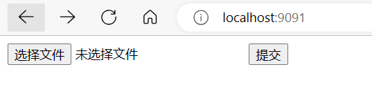
选择一个文件

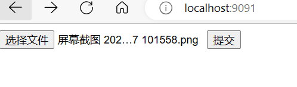
点击提交
响应数据如下：
xxxxxxxxxx61{2 "status": true,3 "msg": null,4 "data": "全容光学芭匡\n\n鬼39\n\n查看(V)\n排序方式(DO)\n分组依据(P)\n刷新(6)\n\n自定义文件来(P)…\n\n撤消重命名(U)\n\n在终端中打开(TD\n\n使用VisualStudio打开(V)\n\nGitGUIHere\n\nGitBashHere\n\nOpenFolderasIntelliIDEAProject\nOpenFolderasPyCharmProject\n\n授予访问权限(G)\n\nSVNUpdate\nSVNCommit..\nTortoiseSVN\n\n新建(W)\n属性(R)\n\nCtrl+乙\n",5 "extData": null6}
源文件：

百度OCR
概述
多场景、多语种、高精度的文字检测与识别服务，多项ICDAR指标居世界第一；广泛适用于远程身份认证、财税报销、文档电子化等场景，为企业降本增效；提供稳定易用的在线API、离线SDK、软件部署包、一体机多种服务形式
特色优势：
- 算法精度高：依托百度领先的深度学习算法和海量数据沉淀，通用文字识别及主流卡证票据识别准确率高达98%以上
- 产品矩阵丰富：70+项细分识别能力，业内首发2个可定制的自定义平台，全面覆盖不同行业/场景的文字识别需求
- 服务稳定可靠：公有云服务可用性高达99.9%，弹性可伸缩、支持高并发承载，使用便捷，稳定可靠
文档地址
https://ai.baidu.com/ai-doc/OCR/
使用
第一步：成为百度AI开放平台的开发者
使用百度AI开放平台的文字识别能力，先要成为百度AI开放平台的开发者，首先让我们花5分钟来注册百度AI开放平台的账号。
先点击注册百度账户，进入如下图的页面快速地建立一个百度账号。 
第二步：开通文字识别服务
1. 领取免费测试资源
登录进入 文字识别控制台，在【概览】页找到「领取免费资源」按钮。

根据您的需求选择相应的文字识别接口，选择完成后点击「0元领取」，领取免费测试资源。
领取成功的免费测试资源将会显示在资源列表的「已领取资源」中。您可以选择「查看领取记录」去往「资源列表」查看。刚领取的资源大约10分钟生效，若领取接口长时间未在「资源列表」上生效显示，可提交工单咨询。
免费测试资源使用完毕可选择按照预付费和后付费方式进行计费，两种计费方式均可在 文字识别控制台 直接开通或购买，详情可参考计费概述
2. 创建应用
领取完免费测试资源后，您需要创建应用才可正式调用文字识别能力。
进入 文字识别控制台，点击 「去创建」，即可进入应用创建页面。

根据您的需要，填写完毕相应信息后，点击「立即创建」，即可完成应用的创建。应用创建完毕后，您可以点击左侧导航中的「应用列表」，进行查看和管理。
然后就能看到创建完的应用 *API KEY* 以及 *Secret KEY* 了。以上两个信息是您应用实际开发的主要凭证，每个应用之间各不相同，请您妥善保管。
第三步：使用文字识别服务
您可以根据以下介绍选择合适的使用方式：
- 通过 百度智能云 - 示例代码中心 在线调用文字识别服务 API
- 通过编写代码调用文字识别服务 API
- 通过软件开发工具包（HTTP-SDK）调用文字识别服务
免费测试资源
登录 文字识别控制台，找到「领取免费资源」按钮。
根据您的需求选择相应的文字识别接口，选择完成后点击「0元领取」，领取免费测试资源。 
领取成功的免费测试资源将会显示在资源列表的「已领取资源」中。您可以选择「查看领取记录」去往「资源列表」查看。刚领取的资源大约10分钟生效，若领取接口长时间未在「资源列表」上生效显示，可提交工单咨询。
调用方式
Content-Type为application/x-www-form-urlencoded，然后通过urlencode格式化请求体。
JSON格式
请求图片需经过base64编码及urlencode后传入：图片的base64编码指将一副图片数据编码成一串字符串，使用该字符串代替图像地址。您可以首先得到图片的二进制，然后去掉编码头后再进行urlencode
base64编码urlencode后大小不超过4M，最短边至少15px，最长边最大4096px
向API服务地址使用POST发送请求，必须在URL中带上参数：
access_token： 必须参数，参考“Access Token获取”。access_token的有效期为30天，需要每30天进行定期更换
获取access_token示例代码：
xxxxxxxxxx851
2package com.baidu.ai.aip.auth;3
4import org.json.JSONObject;5
6import java.io.BufferedReader;7import java.io.InputStreamReader;8import java.net.HttpURLConnection;9import java.net.URL;10import java.util.List;11import java.util.Map;12
13/**14 * 获取token类15 */16public class AuthService {17
18 /**19 * 获取权限token20 * @return 返回示例：21 * {22 * "access_token": "24.460da4889caad24cccdb1fea17221975.2592000.1491995545.282335-1234567",23 * "expires_in": 259200024 * }25 */26 public static String getAuth() {27 // 官网获取的 API Key 更新为你注册的28 String clientId = "百度云应用的AK";29 // 官网获取的 Secret Key 更新为你注册的30 String clientSecret = "百度云应用的SK";31 return getAuth(clientId, clientSecret);32 }33
34 /**35 * 获取API访问token36 * 该token有一定的有效期，需要自行管理，当失效时需重新获取.37 * @param ak - 百度云官网获取的 API Key38 * @param sk - 百度云官网获取的 Securet Key39 * @return assess_token 示例：40 * "24.460da4889caad24cccdb1fea17221975.2592000.1491995545.282335-1234567"41 */42 public static String getAuth(String ak, String sk) {43 // 获取token地址44 String authHost = "https://aip.baidubce.com/oauth/2.0/token?";45 String getAccessTokenUrl = authHost46 // 1. grant_type为固定参数47 + "grant_type=client_credentials"48 // 2. 官网获取的 API Key49 + "&client_id=" + ak50 // 3. 官网获取的 Secret Key51 + "&client_secret=" + sk;52 try {53 URL realUrl = new URL(getAccessTokenUrl);54 // 打开和URL之间的连接55 HttpURLConnection connection = (HttpURLConnection) realUrl.openConnection();56 connection.setRequestMethod("GET");57 connection.connect();58 // 获取所有响应头字段59 Map<String, List<String>> map = connection.getHeaderFields();60 // 遍历所有的响应头字段61 for (String key : map.keySet()) {62 System.err.println(key + "--->" + map.get(key));63 }64 // 定义 BufferedReader输入流来读取URL的响应65 BufferedReader in = new BufferedReader(new InputStreamReader(connection.getInputStream()));66 String result = "";67 String line;68 while ((line = in.readLine()) != null) {69 result += line;70 }71 /**72 * 返回结果示例73 */74 System.err.println("result:" + result);75 JSONObject jsonObject = new JSONObject(result);76 String access_token = jsonObject.getString("access_token");77 return access_token;78 } catch (Exception e) {79 System.err.printf("获取token失败！");80 e.printStackTrace(System.err);81 }82 return null;83 }84
85}
通用文字识别（标准版）
HTTP 方法：POST
请求URL： https://aip.baidubce.com/rest/2.0/ocr/v1/general_basic
URL参数：
| 参数 | 值 |
|---|---|
| access_token | 通过API Key和Secret Key获取的access_token |
Header如下：
| 参数 | 值 |
|---|---|
| Content-Type | application/x-www-form-urlencoded |
Body中放置请求参数，参数详情如下：
| 参数 | 是否必选 | 类型 | 可选值范围 | 说明 |
|---|---|---|---|---|
| image | 和 url/pdf_file/ofd_file 四选一 | string | - | 图像数据，base64编码后进行urlencode，要求base64编码和urlencode后大小不超过8M，最短边至少15px，最长边最大4096px，支持jpg/jpeg/png/bmp格式 优先级：image > url > pdf_file > ofd_file ，当image字段存在时，url、pdf_file、ofd_file 字段失效 |
| url | 和 image/pdf_file/ofd_file 四选一 | string | - | 图片完整url，url长度不超过1024字节，url对应的图片base64编码后大小不超过8M，最短边至少15px，最长边最大4096px，支持jpg/jpeg/png/bmp格式 优先级：image > url > pdf_file > ofd_file，当image字段存在时，url字段失效 请注意关闭URL防盗链 |
| pdf_file | 和 image/url/ofd_file 四选一 | string | - | PDF文件，base64编码后进行urlencode，要求base64编码和urlencode后大小不超过8M，最短边至少15px，最长边最大4096px 优先级：image > url > pdf_file > ofd_file，当image、url字段存在时，pdf_file字段失效 |
| pdf_file_num | 否 | string | - | 需要识别的PDF文件的对应页码，当 pdf_file 参数有效时，识别传入页码的对应页面内容，若不传入，则默认识别第 1 页 |
| ofd_file | 和 image/url/pdf_file 四选一 | string | - | OFD文件，base64编码后进行urlencode，要求base64编码和urlencode后大小不超过8M，最短边至少15px，最长边最大4096px 优先级：image > url > pdf_file > ofd_file，当image、url、pdf_file字段存在时，ofd_file字段失效 |
| ofd_file_num | 否 | string | - | 需要识别的OFD文件的对应页码，当 ofd_file 参数有效时，识别传入页码的对应页面内容，若不传入，则默认识别第 1 页 |
| language_type | 否 | string | CHN_ENG ENG JAP KOR FRE SPA POR GER ITA RUS | 识别语言类型，默认为CHN_ENG 可选值包括： - CHN_ENG：中英文混合 - ENG：英文 - JAP：日语 - KOR：韩语 - FRE：法语 - SPA：西班牙语 - POR：葡萄牙语 - GER：德语 - ITA：意大利语 - RUS：俄语 |
| detect_direction | 否 | string | true/false | 是否检测图像朝向，默认不检测，即：false。朝向是指输入图像是正常方向、逆时针旋转90/180/270度。可选值包括: - true：检测朝向； - false：不检测朝向。 |
| detect_language | 否 | string | true/false | 是否检测语言，默认不检测，即：false。当前支持中文、英语、日语、韩语 |
| paragraph | 否 | string | true/false | 是否输出段落信息 |
| probability | 否 | string | true/false | 是否返回识别结果中每一行的置信度 |
示例：
xxxxxxxxxx511
2package com.baidu.ai.aip;3
4import com.baidu.ai.aip.utils.Base64Util;5import com.baidu.ai.aip.utils.FileUtil;6import com.baidu.ai.aip.utils.HttpUtil;7
8import java.net.URLEncoder;9
10/**11* 通用文字识别12*/13public class GeneralBasic {14
15 /**16 * 重要提示代码中所需工具类17 * FileUtil,Base64Util,HttpUtil,GsonUtils请从18 * https://ai.baidu.com/file/658A35ABAB2D404FBF903F64D47C1F7219 * https://ai.baidu.com/file/C8D81F3301E24D2892968F09AE1AD6E220 * https://ai.baidu.com/file/544D677F5D4E4F17B4122FBD60DB82B321 * https://ai.baidu.com/file/470B3ACCA3FE43788B5A963BF0B625F322 * 下载23 */24 public static String generalBasic() {25 // 请求url26 String url = "https://aip.baidubce.com/rest/2.0/ocr/v1/general_basic";27 try {28 // 本地文件路径29 String filePath = "[本地文件路径]";30 byte[] imgData = FileUtil.readFileByBytes(filePath);31 String imgStr = Base64Util.encode(imgData);32 String imgParam = URLEncoder.encode(imgStr, "UTF-8");33
34 String param = "image=" + imgParam;35
36 // 注意这里仅为了简化编码每一次请求都去获取access_token，线上环境access_token有过期时间， 客户端可自行缓存，过期后重新获取。37 String accessToken = "[调用鉴权接口获取的token]";38
39 String result = HttpUtil.post(url, accessToken, param);40 System.out.println(result);41 return result;42 } catch (Exception e) {43 e.printStackTrace();44 }45 return null;46 }47
48 public static void main(String[] args) {49 GeneralBasic.generalBasic();50 }51}
响应：
| 字段 | 是否必选 | 类型 | 说明 |
|---|---|---|---|
| direction | 否 | int32 | 图像方向，当 detect_direction=true 时返回该字段。 - - 1：未定义， - 0：正向， - 1：逆时针90度， - 2：逆时针180度， - 3：逆时针270度 |
| log_id | 是 | uint64 | 唯一的log id，用于问题定位 |
| words_result_num | 是 | uint32 | 识别结果数，表示words_result的元素个数 |
| words_result | 是 | array[] | 识别结果数组 |
| + words | 否 | string | 识别结果字符串 |
| + probability | 否 | object | 识别结果中每一行的置信度值，包含average：行置信度平均值，variance：行置信度方差，min：行置信度最小值，当 probability=true 时返回该字段 |
| paragraphs_result | 否 | array[] | 段落检测结果，当 paragraph=true 时返回该字段 |
| + words_result_idx | 否 | array[] | 一个段落包含的行序号，当 paragraph=true 时返回该字段 |
| paragraphs_result_num | 否 | uint32 | 识别结果数，表示 paragraphs_result的元素个数，当 paragraph=true 时返回该字段 |
| language | 否 | int32 | 语种类型，当 detect_language=true 时返回该字段。 - - 1：未定义， - 0：英文， - 1：日文， - 2：韩文， - 3：中文 |
| pdf_file_size | 否 | string | 传入PDF文件的总页数，当 pdf_file 参数有效时返回该字段 |
| ofd_file_size | 否 | string | 传入OFD文件的总页数，当 ofd_file 参数有效时返回该字段 |
路桥费识别
支持对全国范围不同版式过路、过桥费发票的发票代码、发票号码、入口、出口、日期、时间、金额、省、市9个字段进行结构化识别
HTTP 方法: POST
请求URL: https://aip.baidubce.com/rest/2.0/ocr/v1/toll_invoice
URL参数：
| 参数 | 值 |
|---|---|
| access_token | 通过API Key和Secret Key获取的access_token, |
Header如下：
| 参数 | 值 |
|---|---|
| Content-Type | application/x-www-form-urlencoded |
请求参数
| 参数 | 是否必须 | 类型 | 可选值范围 | 说明 |
|---|---|---|---|---|
| image | 和 url/pdf_file/ofd_file 四选一 | string | - | 图像数据，base64编码后进行urlencode，要求base64编码和urlencode后大小不超过8M，最短边至少15px，最长边最大4096px，支持jpg/jpeg/png/bmp格式 优先级：image > url > pdf_file > ofd_file ，当image字段存在时，url、pdf_file、ofd_file 字段失效 |
| url | 和 image/pdf_file/ofd_file 四选一 | string | - | 图片完整url，url长度不超过1024字节，url对应的图片base64编码后大小不超过8M，最短边至少15px，最长边最大4096px，支持jpg/jpeg/png/bmp格式 优先级：image > url > pdf_file > ofd_file，当image字段存在时，url字段失效 请注意关闭URL防盗链 |
| pdf_file | 和 image/url/ofd_file 四选一 | string | - | PDF文件，base64编码后进行urlencode，要求base64编码和urlencode后大小不超过8M，最短边至少15px，最长边最大4096px 优先级：image > url > pdf_file > ofd_file，当image、url字段存在时，pdf_file字段失效 |
| pdf_file_num | 否 | string | - | 需要识别的PDF文件的对应页码，当 pdf_file 参数有效时，识别传入页码的对应页面内容，若不传入，则默认识别第 1 页 |
| ofd_file | 和 image/url/pdf_file 四选一 | string | - | OFD文件，base64编码后进行urlencode，要求base64编码和urlencode后大小不超过8M，最短边至少15px，最长边最大4096px 优先级：image > url > pdf_file > ofd_file，当image、url、pdf_file字段存在时，ofd_file字段失效 |
| ofd_file_num | 否 | string | - | 需要识别的OFD文件的对应页码，当 ofd_file 参数有效时，识别传入页码的对应页面内容，若不传入，则默认识别第 1 页 |
响应
| 参数 | 是否必须 | 类型 | 说明 |
|---|---|---|---|
| log_id | 是 | uint64 | 唯一的log id，用于问题定位 |
| words_result_num | 是 | uint32 | 识别结果数，表示words_result的元素个数 |
| words_result | 是 | object | 识别结果 |
| + InvoiceCode | 是 | string | 发票代码 |
| + InvoiceNum | 是 | string | 发票号码 |
| + Entrance | 是 | string | 入口 |
| + Exit | 是 | string | 出口 |
| + Date | 是 | string | 日期 |
| + Time | 是 | string | 时间 |
| + Fare | 是 | string | 金额 |
| + Province | 是 | string | 省 |
| + City | 是 | string | 市 |
end
2023 11 09